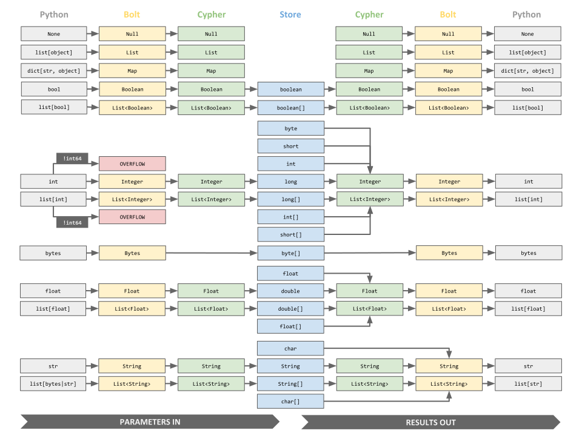

API Documentation¶
GraphDatabase¶
Driver Construction¶
The neo4j.Driver construction is done via a classmethod on the neo4j.GraphDatabase class.
- class neo4j.GraphDatabase¶
Accessor for
neo4j.Driverconstruction.- classmethod driver(uri, *, auth=None, **config)¶
Create a driver.
- Parameters:
uri (str) – the connection URI for the driver, see URI for available URIs.
auth (_TAuth | AuthManager) – the authentication details, see Auth for available authentication details.
config – driver configuration key-word arguments, see Driver Configuration for available key-word arguments.
- Return type:
Driver creation example:
from neo4j import GraphDatabase uri = "neo4j://example.com:7687" driver = GraphDatabase.driver(uri, auth=("neo4j", "password")) driver.close() # close the driver object
For basic authentication,
authcan be a simple tuple, for example:auth = ("neo4j", "password")
This will implicitly create a
neo4j.Authwithscheme="basic". Other authentication methods are described under Auth.withblock context example:from neo4j import GraphDatabase uri = "neo4j://example.com:7687" with GraphDatabase.driver(uri, auth=("neo4j", "password")) as driver: ... # use the driver
- classmethod bookmark_manager(initial_bookmarks=None, bookmarks_supplier=None, bookmarks_consumer=None)¶
Create a
BookmarkManagerwith default implementation.Basic usage example to configure sessions with the built-in bookmark manager implementation so that all work is automatically causally chained (i.e., all reads can observe all previous writes even in a clustered setup):
import neo4j # omitting closing the driver for brevity driver = neo4j.GraphDatabase.driver(...) bookmark_manager = neo4j.GraphDatabase.bookmark_manager(...) with driver.session( bookmark_manager=bookmark_manager ) as session1: with driver.session( bookmark_manager=bookmark_manager, access_mode=neo4j.READ_ACCESS ) as session2: result1 = session1.run("<WRITE_QUERY>") result1.consume() # READ_QUERY is guaranteed to see what WRITE_QUERY wrote. result2 = session2.run("<READ_QUERY>") result2.consume()
This is a very contrived example, and in this particular case, having both queries in the same session has the exact same effect and might even be more performant. However, when dealing with sessions spanning multiple threads, Tasks, processes, or even hosts, the bookmark manager can come in handy as sessions are not safe to be used concurrently.
- Parameters:
initial_bookmarks (Bookmarks | Iterable[str] | None) – The initial set of bookmarks. The returned bookmark manager will use this to initialize its internal bookmarks.
bookmarks_supplier (Callable[[], Bookmarks] | None) – Function which will be called every time the default bookmark manager’s method
BookmarkManager.get_bookmarks()gets called. The function takes no arguments and must return aBookmarksobject. The result ofbookmarks_supplierwill then be concatenated with the internal set of bookmarks and used to configure the session in creation. It will, however, not update the internal set of bookmarks.bookmarks_consumer (Callable[[Bookmarks], None] | None) – Function which will be called whenever the set of bookmarks handled by the bookmark manager gets updated with the new internal bookmark set. It will receive the new set of bookmarks as a
Bookmarksobject and returnNone.
- Returns:
A default implementation of
BookmarkManager.- Return type:
Added in version 5.0.
Changed in version 5.3: The bookmark manager no longer tracks bookmarks per database. This effectively changes the signature of almost all bookmark manager related methods:
initial_bookmarksis no longer a mapping from database name to bookmarks but plain bookmarks.bookmarks_supplierno longer receives the database name as an argument.bookmarks_consumerno longer receives the database name as an argument.
Changed in version 5.8: Stabilized from experimental.
URI¶
On construction, the scheme of the URI determines the type of neo4j.Driver object created.
Available valid URIs:
bolt://host[:port]bolt+ssc://host[:port]bolt+s://host[:port]neo4j://host[:port][?routing_context]neo4j+ssc://host[:port][?routing_context]neo4j+s://host[:port][?routing_context]
uri = "bolt://example.com:7687"
uri = "neo4j://example.com:7687?policy=europe"
Each supported scheme maps to a particular neo4j.Driver subclass that implements a specific behaviour.
URI Scheme |
Driver Object and Setting |
|---|---|
bolt |
BoltDriver with no encryption. |
bolt+ssc |
BoltDriver with encryption (accepts self signed certificates). |
bolt+s |
BoltDriver with encryption (accepts only certificates signed by a certificate authority), full certificate checks. |
neo4j |
Neo4jDriver with no encryption. |
neo4j+ssc |
Neo4jDriver with encryption (accepts self signed certificates). |
neo4j+s |
Neo4jDriver with encryption (accepts only certificates signed by a certificate authority), full certificate checks. |
Note
See https://neo4j.com/docs/operations-manual/current/configuration/ports/ for Neo4j ports.
Auth¶
To authenticate with Neo4j the authentication details are supplied at driver creation.
The auth token is an object of the class neo4j.Auth containing static details or neo4j.auth_management.AuthManager object.
- class neo4j.Auth(scheme, principal, credentials, realm=None, **parameters)¶
Container for auth details.
- Parameters:
scheme (str | None) – specifies the type of authentication, examples: “basic”, “kerberos”
principal (str | None) – specifies who is being authenticated
credentials (str | None) – authenticates the principal
realm (str | None) – specifies the authentication provider
parameters (Any) – extra key word parameters passed along to the authentication provider
Example:
import neo4j
auth = neo4j.Auth("basic", "neo4j", "password")
- class neo4j.auth_management.AuthManager¶
Abstract base class for authentication information managers.
The driver provides some default implementations of this class in
AuthManagersfor convenience.Custom implementations of this class can be used to provide more complex authentication refresh functionality.
Warning
The manager must not interact with the driver in any way as this can cause deadlocks and undefined behaviour.
Furthermore, the manager is expected to be thread-safe.
The token returned must always belong to the same identity. Switching identities using the AuthManager is undefined behavior. You may use session-level authentication for such use-cases.
See also
Added in version 5.8.
Changed in version 5.12:
on_auth_expiredwas removed from the interface and replaced byhandle_security_exception(). The new method is called when the server returns any Neo.ClientError.Security.* error. Its signature differs in that it additionally receives the error returned by the server and returns a boolean indicating whether the error was handled.Changed in version 5.14: Stabilized from preview.
- abstractmethod get_auth()¶
Return the current authentication information.
The driver will call this method very frequently. It is recommended to implement some form of caching to avoid unnecessary overhead.
Warning
The method must only ever return auth information belonging to the same identity. Switching identities using the AuthManager is undefined behavior. You may use session-level authentication for such use-cases.
- abstractmethod handle_security_exception(auth, error)¶
Handle the server indicating authentication failure.
The driver will call this method when the server returns any Neo.ClientError.Security.* error. The error will then be processed further as usual.
- Parameters:
auth (_TAuth) – The authentication information that was used when the server returned the error.
error (Neo4jError) – The error returned by the server.
- Returns:
Whether the error was handled (
True), in which case the driver will mark the error as retryable (seeNeo4jError.is_retryable()).- Return type:
Added in version 5.12.
- class neo4j.auth_management.AuthManagers¶
A collection of
AuthManagerfactories.Added in version 5.8.
Changed in version 5.14: Stabilized from preview.
- static static(auth)¶
Create a static auth manager.
The manager will always return the auth info provided at its creation.
Example:
# NOTE: this example is for illustration purposes only. # The driver will automatically wrap static auth info in a # static auth manager. import neo4j from neo4j.auth_management import AuthManagers auth = neo4j.basic_auth("neo4j", "password") with neo4j.GraphDatabase.driver( "neo4j://example.com:7687", auth=AuthManagers.static(auth) # auth=auth # this is equivalent ) as driver: ... # do stuff
- Parameters:
- Returns:
An instance of an implementation of
AuthManagerthat always returns the same auth.- Return type:
Added in version 5.8.
Changed in version 5.14: Stabilized from preview.
- static basic(provider)¶
Create an auth manager handling basic auth password rotation.
This factory wraps the provider function in an auth manager implementation that caches the provided auth info until the server notifies the driver that the auth info has expired (by returning an error that indicates that the password is invalid).
Note that this implies that the provider function will be called again if it provides wrong auth info, potentially deferring failure due to a wrong password or username.
Warning
The provider function must not interact with the driver in any way as this can cause deadlocks and undefined behaviour.
The provider function must only ever return auth information belonging to the same identity. Switching identities is undefined behavior. You may use session-level authentication for such use-cases.
Example:
import neo4j from neo4j.auth_management import ( AuthManagers, ExpiringAuth, ) def auth_provider(): # some way of getting a token user, password = get_current_auth() return (user, password) with neo4j.GraphDatabase.driver( "neo4j://example.com:7687", auth=AuthManagers.basic(auth_provider) ) as driver: ... # do stuff
- Parameters:
provider (Callable[[], TypeAliasForwardRef('typing.Tuple[Any, Any] | Auth | None')]) – A callable that provides new auth info whenever the server notifies the driver that the previous auth info is invalid.
- Returns:
An instance of an implementation of
AuthManagerthat returns auth info from the given provider and refreshes it, calling the provider again, when the auth info was rejected by the server.- Return type:
Added in version 5.12.
Changed in version 5.14: Stabilized from preview.
- static bearer(provider)¶
Create an auth manager for potentially expiring bearer auth tokens.
This factory wraps the provider function in an auth manager implementation that caches the provided auth info until either the
ExpiringAuth.expires_atexceeded or the server notified the driver that the auth info has expired (by returning an error that indicates that the bearer auth token has expired).Warning
The provider function must not interact with the driver in any way as this can cause deadlocks and undefined behaviour.
The provider function must only ever return auth information belonging to the same identity. Switching identities is undefined behavior. You may use session-level authentication for such use-cases.
Example:
import neo4j from neo4j.auth_management import ( AuthManagers, ExpiringAuth, ) def auth_provider(): # some way of getting a token sso_token = get_sso_token() # assume we know our tokens expire every 60 seconds expires_in = 60 # Include a little buffer so that we fetch a new token # *before* the old one expires expires_in -= 10 auth = neo4j.bearer_auth(sso_token) return ExpiringAuth(auth=auth).expires_in(expires_in) with neo4j.GraphDatabase.driver( "neo4j://example.com:7687", auth=AuthManagers.bearer(auth_provider) ) as driver: ... # do stuff
- Parameters:
provider (Callable[[], ExpiringAuth]) – A callable that provides a
ExpiringAuthinstance.- Returns:
An instance of an implementation of
AuthManagerthat returns auth info from the given provider and refreshes it, calling the provider again, when the auth info expires (either because it’s reached its expiry time or because the server flagged it as expired).- Return type:
Added in version 5.12.
Changed in version 5.14: Stabilized from preview.
- class neo4j.auth_management.ExpiringAuth(auth, expires_at=None)¶
Represents potentially expiring authentication information.
This class is used with
AuthManagers.bearer()andAsyncAuthManagers.bearer().- Parameters:
auth (Tuple[Any, Any] | Auth | None) – The authentication information.
expires_at (float | None) – Unix timestamp (seconds since 1970-01-01 00:00:00 UTC) indicating when the authentication information expires. If
None, the authentication information is considered to not expire until the server explicitly indicates so.
Added in version 5.8.
Changed in version 5.9:
Removed parameter and attribute
expires_in(relative expiration time). Replaced withexpires_at(absolute expiration time).expires_in()can be used to create anExpiringAuthwith a relative expiration time.
Changed in version 5.14: Stabilized from preview.
- auth: _TAuth¶
- expires_in(seconds)¶
Return a (flat) copy of this object with a new expiration time.
This is a convenience method for creating an
ExpiringAuthfor a relative expiration time (“expires in” instead of “expires at”).>>> import time, freezegun >>> with freezegun.freeze_time("1970-01-01 00:00:40"): ... ExpiringAuth(("user", "pass")).expires_in(2) ExpiringAuth(auth=('user', 'pass'), expires_at=42.0) >>> with freezegun.freeze_time("1970-01-01 00:00:40"): ... ExpiringAuth(("user", "pass"), time.time() + 2) ExpiringAuth(auth=('user', 'pass'), expires_at=42.0)
- Parameters:
seconds (float) – The number of seconds from now until the authentication information expires.
- Return type:
Added in version 5.9.
Auth Token Helper Functions¶
Alternatively, one of the auth token helper functions can be used.
- neo4j.basic_auth(user, password, realm=None)¶
Generate a basic auth token for a given user and password.
This will set the scheme to “basic” for the auth token.
- Parameters:
- Returns:
auth token for use with
GraphDatabase.driver()orAsyncGraphDatabase.driver()- Return type:
- neo4j.kerberos_auth(base64_encoded_ticket)¶
Generate a kerberos auth token with the base64 encoded ticket.
This will set the scheme to “kerberos” for the auth token.
- Parameters:
base64_encoded_ticket (str) – a base64 encoded service ticket, this will set the credentials
- Returns:
auth token for use with
GraphDatabase.driver()orAsyncGraphDatabase.driver()- Return type:
- neo4j.bearer_auth(base64_encoded_token)¶
Generate an auth token for Single-Sign-On providers.
This will set the scheme to “bearer” for the auth token.
- Parameters:
base64_encoded_token (str) – a base64 encoded authentication token generated by a Single-Sign-On provider.
- Returns:
auth token for use with
GraphDatabase.driver()orAsyncGraphDatabase.driver()- Return type:
- neo4j.custom_auth(principal, credentials, realm, scheme, **parameters)¶
Generate a custom auth token.
- Parameters:
principal (str | None) – specifies who is being authenticated
credentials (str | None) – authenticates the principal
realm (str | None) – specifies the authentication provider
scheme (str | None) – specifies the type of authentication
parameters (Any) – extra key word parameters passed along to the authentication provider
- Returns:
auth token for use with
GraphDatabase.driver()orAsyncGraphDatabase.driver()- Return type:
Driver¶
Every Neo4j-backed application will require a driver object.
This object holds the details required to establish connections with a Neo4j database, including server URIs, credentials and other configuration.
neo4j.Driver objects hold a connection pool from which neo4j.Session objects can borrow connections.
Closing a driver will immediately shut down all connections in the pool.
Note
Driver objects only open connections and pool them as needed. To verify that
the driver is able to communicate with the database without executing any
query, use neo4j.Driver.verify_connectivity().
- class neo4j.Driver¶
Base class for all driver types.
Drivers are used as the primary access point to Neo4j.
- execute_query(query, parameters_=None, routing_=neo4j.RoutingControl.WRITE, database_=None, impersonated_user_=None, bookmark_manager_=self.execute_query_bookmark_manager, auth_=None, result_transformer_=Result.to_eager_result, **kwargs)¶
Execute a query in a transaction function and return all results.
This method is a handy wrapper for lower-level driver APIs like sessions, transactions, and transaction functions. It is intended for simple use cases where there is no need for managing all possible options.
The internal usage of transaction functions provides a retry-mechanism for appropriate errors. Furthermore, this means that queries using
CALL {} IN TRANSACTIONSor the olderUSING PERIODIC COMMITwill not work (useSession.run()for these).The method is roughly equivalent to:
def execute_query( query_, parameters_, routing_, database_, impersonated_user_, bookmark_manager_, auth_, result_transformer_, **kwargs ): @unit_of_work(query_.metadata, query_.timeout) def work(tx): result = tx.run(query_.text, parameters_, **kwargs) return result_transformer_(result) with driver.session( database=database_, impersonated_user=impersonated_user_, bookmark_manager=bookmark_manager_, auth=auth_, ) as session: if routing_ == RoutingControl.WRITE: return session.execute_write(work) elif routing_ == RoutingControl.READ: return session.execute_read(work)
Usage example:
from typing import List import neo4j def example(driver: neo4j.Driver) -> List[str]: """Get the name of all 42 year-olds.""" records, summary, keys = driver.execute_query( "MATCH (p:Person {age: $age}) RETURN p.name", {"age": 42}, routing_=neo4j.RoutingControl.READ, # or just "r" database_="neo4j", ) assert keys == ["p.name"] # not needed, just for illustration # log_summary(summary) # log some metadata return [str(record["p.name"]) for record in records] # or: return [str(record[0]) for record in records] # or even: return list(map(lambda r: str(r[0]), records))
Another example:
import neo4j def example(driver: neo4j.Driver) -> int: """Call all young people "My dear" and get their count.""" record = driver.execute_query( "MATCH (p:Person) WHERE p.age <= $age " "SET p.nickname = 'My dear' " "RETURN count(*)", # optional routing parameter, as write is default # routing_=neo4j.RoutingControl.WRITE, # or just "w", database_="neo4j", result_transformer_=neo4j.Result.single, age=15, ) assert record is not None # for typechecking and illustration count = record[0] assert isinstance(count, int) return count
- Parameters:
query (LiteralString | Query) – Cypher query to execute. Use a
Queryobject to pass a query with additional transaction configuration.parameters_ (Dict[str, Any] | None) – parameters to use in the query
routing_ (RoutingControl) – Whether to route the query to a reader (follower/read replica) or a writer (leader) in the cluster. Default is to route to a writer.
database_ (str | None) –
Database to execute the query against.
None(default) uses the database configured on the server side.Note
It is recommended to always specify the database explicitly when possible. This allows the driver to work more efficiently, as it will not have to resolve the default database first.
See also the Session config database.
impersonated_user_ (str | None) –
Name of the user to impersonate.
This means that all query will be executed in the security context of the impersonated user. For this, the user for which the
Driverhas been created needs to have the appropriate permissions.See also the Session config impersonated_user.
auth_ (Tuple[Any, Any] | Auth | None) –
Authentication information to use for this query.
By default, the driver configuration is used.
See also the Session config auth.
result_transformer_ (Callable[[Result], T]) –
A function that gets passed the
neo4j.Resultobject resulting from the query and converts it to a different type. The result of the transformer function is returned by this method.Warning
The transformer function must not return the
neo4j.Resultitself.Warning
N.B. the driver might retry the underlying transaction so the transformer might get invoked more than once (with different
neo4j.Resultobjects). Therefore, it needs to be idempotent (i.e., have the same effect, regardless if called once or many times).Example transformer that checks that exactly one record is in the result stream, then returns the record and the result summary:
from typing import Tuple import neo4j def transformer( result: neo4j.Result ) -> Tuple[neo4j.Record, neo4j.ResultSummary]: record = result.single(strict=True) summary = result.consume() return record, summary
Note that methods of
neo4j.Resultthat don’t take mandatory arguments can be used directly as transformer functions. For example:import neo4j def example(driver: neo4j.Driver) -> neo4j.Record:: record = driver.execute_query( "SOME QUERY", result_transformer_=neo4j.Result.single ) # is equivalent to: def transformer(result: neo4j.Result) -> neo4j.Record: return result.single() def example(driver: neo4j.Driver) -> neo4j.Record:: record = driver.execute_query( "SOME QUERY", result_transformer_=transformer )
bookmark_manager_ (BookmarkManager | None) –
Specify a bookmark manager to use.
If present, the bookmark manager is used to keep the query causally consistent with all work executed using the same bookmark manager.
Defaults to the driver’s
execute_query_bookmark_manager.Pass
Noneto disable causal consistency.kwargs (Any) – additional keyword parameters. None of these can end with a single underscore. This is to avoid collisions with the keyword configuration parameters of this method. If you need to pass such a parameter, use the
parameters_parameter instead. Parameters passed as kwargs take precedence over those passed inparameters_.
- Returns:
the result of the
result_transformer_- Return type:
T
Added in version 5.5.
Changed in version 5.8:
Added
auth_parameter in preview.Stabilized from experimental.
Changed in version 5.14: Stabilized
auth_parameter from preview.
- session(**config)¶
Create a session.
See Session Construction for details.
- Parameters:
config – session configuration key-word arguments, see Session Configuration for available key-word arguments.
- Returns:
new
neo4j.Sessionobject- Return type:
- close()¶
Shut down, closing any open connections in the pool.
Warning
While the driver object is concurrency-safe,
closeis not. Make sure you are not using the driver object or any resources spawned from it (such as sessions or transactions) while calling this method. Failing to do so results in unspecified behavior.- Return type:
None
- property execute_query_bookmark_manager: BookmarkManager¶
The driver’s default query bookmark manager.
This is the default
BookmarkManagerused byexecute_query(). This can be used to causally chainexecute_query()calls and sessions. Example:def example(driver: neo4j.Driver) -> None: driver.execute_query("<QUERY 1>") with driver.session( bookmark_manager=driver.execute_query_bookmark_manager ) as session: # every query inside this session will be causally chained # (i.e., can read what was written by <QUERY 1>) session.run("<QUERY 2>") # subsequent execute_query calls will be causally chained # (i.e., can read what was written by <QUERY 2>) driver.execute_query("<QUERY 3>")
Added in version 5.5.
Changed in version 5.8:
Renamed from
query_bookmark_managertoexecute_query_bookmark_manager.Stabilized from experimental.
- verify_connectivity(**config)¶
Verify that the driver can establish a connection to the server.
This verifies if the driver can establish a reading connection to a remote server or a cluster. Some data will be exchanged.
Note
Even if this method raises an exception, the driver still needs to be closed via
close()to free up all resources.- Parameters:
config –
accepts the same configuration key-word arguments as
session().Warning
All configuration key-word arguments are experimental. They might be changed or removed in any future version without prior notice.
- Raises:
Exception – if the driver cannot connect to the remote. Use the exception to further understand the cause of the connectivity problem.
- Return type:
None
Changed in version 5.0: The undocumented return value has been removed. If you need information about the remote server, use
get_server_info()instead.
- get_server_info(**config)¶
Get information about the connected Neo4j server.
Try to establish a working read connection to the remote server or a member of a cluster and exchange some data. Then return the contacted server’s information.
In a cluster, there is no guarantee about which server will be contacted.
Note
Even if this method raises an exception, the driver still needs to be closed via
close()to free up all resources.- Parameters:
config –
accepts the same configuration key-word arguments as
session().Warning
All configuration key-word arguments are experimental. They might be changed or removed in any future version without prior notice.
- Raises:
Exception – if the driver cannot connect to the remote. Use the exception to further understand the cause of the connectivity problem.
- Return type:
Added in version 5.0.
- supports_multi_db()¶
Check if the server or cluster supports multi-databases.
- Returns:
Returns true if the server or cluster the driver connects to supports multi-databases, otherwise false.
- Return type:
Note
Feature support query based solely on the Bolt protocol version. The feature might still be disabled on the server side even if this function return
True. It just guarantees that the driver won’t throw aConfigurationErrorwhen trying to use this driver feature.
- verify_authentication(auth=None, **config)¶
Verify that the authentication information is valid.
Like
verify_connectivity(), but for checking authentication.Try to establish a working read connection to the remote server or a member of a cluster and exchange some data. In a cluster, there is no guarantee about which server will be contacted. If the data exchange is successful and the authentication information is valid,
Trueis returned. Otherwise, the error will be matched against a list of known authentication errors. If the error is on that list,Falseis returned indicating that the authentication information is invalid. Otherwise, the error is re-raised.- Parameters:
auth (Auth | tuple[str, str] | None) – authentication information to verify. Same as the session config Auth.
config –
accepts the same configuration key-word arguments as
session().Warning
All configuration key-word arguments (except
auth) are experimental. They might be changed or removed in any future version without prior notice.
- Raises:
Exception – if the driver cannot connect to the remote. Use the exception to further understand the cause of the connectivity problem.
- Return type:
Added in version 5.8.
Changed in version 5.14: Stabilized from experimental.
- supports_session_auth()¶
Check if the remote supports connection re-authentication.
- Returns:
Returns true if the server or cluster the driver connects to supports re-authentication of existing connections, otherwise false.
- Return type:
Note
Feature support query based solely on the Bolt protocol version. The feature might still be disabled on the server side even if this function return
True. It just guarantees that the driver won’t throw aConfigurationErrorwhen trying to use this driver feature.Added in version 5.8.
Driver Configuration¶
Additional configuration can be provided via the neo4j.Driver constructor.
connection_acquisition_timeout¶
The maximum amount of time in seconds the driver will wait to either acquire an idle connection from the pool (including potential liveness checks) or create a new connection when the pool is not full and all existing connection are in use.
Since this process may involve opening a new connection including handshakes, it should be chosen larger than connection_timeout.
- Type:
float- Default:
60.0
connection_timeout¶
The maximum amount of time in seconds to wait for a TCP connection to be established.
This does not include any handshake(s), or authentication required before the connection can be used to perform database related work.
- Type:
float- Default:
30.0
encrypted¶
Specify whether to use an encrypted connection between the driver and server.
This setting is only available for URI schemes bolt:// and neo4j:// (URI).
This setting does not have any effect if a custom ssl_context is configured.
- Type:
bool- Default:
False
keep_alive¶
Specify whether TCP keep-alive should be enabled.
- Type:
bool- Default:
True
max_connection_lifetime¶
The maximum duration in seconds that the driver will keep a connection for before being removed from the pool.
- Type:
float- Default:
3600
liveness_check_timeout¶
Pooled connections that have been idle in the pool for longer than this timeout (specified in seconds) will be tested before they are used again, to ensure they are still live. If this option is set too low, additional network round trips will be incurred when acquiring a connection, which causes a performance hit.
If this is set high, you may receive sessions that are backed by no longer live connections, which will lead to exceptions in your application. Assuming the database is running, these exceptions will go away if you retry or use a driver API with built-in retries.
Hence, this parameter tunes a balance between the likelihood of your application seeing connection problems, and performance.
You normally should not need to tune this parameter.
No connection liveliness check is done by default (None).
A value of 0 means connections will always be tested for validity.
Negative values are not allowed.
Added in version 5.15.
max_connection_pool_size¶
The maximum total number of connections allowed, per host (i.e. cluster nodes), to be managed by the connection pool.
- Type:
int- Default:
100
max_transaction_retry_time¶
The maximum amount of time in seconds that a managed transaction will retry before failing.
- Type:
float- Default:
30.0
resolver¶
A custom resolver function to resolve any addresses the driver receives ahead of DNS resolution.
This function is called with an Address and should return an iterable of Address objects or values that can be used to construct Address objects.
If no custom resolver function is supplied, the internal resolver moves straight to regular DNS resolution.
For example:
import neo4j
def custom_resolver(socket_address):
# assert isinstance(socket_address, neo4j.Address)
if socket_address != ("example.com", 9999):
raise OSError(f"Unexpected socket address {socket_address!r}")
# You can return any neo4j.Address object
yield neo4j.Address(("localhost", 7687)) # IPv4
yield neo4j.Address(("::1", 7687, 0, 0)) # IPv6
yield neo4j.Address.parse("localhost:7687")
yield neo4j.Address.parse("[::1]:7687")
# or any tuple that can be passed to neo4j.Address(...).
# Initially, this will be interpreted as IPv4, but DNS resolution
# will turn it into IPv6 if appropriate.
yield "::1", 7687
# This will be interpreted as IPv6 directly, but DNS resolution will
# still happen.
yield "::1", 7687, 0, 0
yield "127.0.0.1", 7687
driver = neo4j.GraphDatabase.driver("neo4j://example.com:9999",
auth=("neo4j", "password"),
resolver=custom_resolver)
trust¶
Specify how to determine the authenticity of encryption certificates provided by the Neo4j instance on connection.
This setting is only available for URI schemes bolt:// and neo4j:// (URI).
This setting does not have any effect if encrypted is set to False or a
custom ssl_context is configured.
- Type:
neo4j.TRUST_SYSTEM_CA_SIGNED_CERTIFICATES,neo4j.TRUST_ALL_CERTIFICATES
- neo4j.TRUST_ALL_CERTIFICATES¶
Trust any server certificate (default). This ensures that communication is encrypted but does not verify the server certificate against a certificate authority. This option is primarily intended for use with the default auto-generated server certificate.
- neo4j.TRUST_SYSTEM_CA_SIGNED_CERTIFICATES¶
Trust server certificates that can be verified against the system certificate authority. This option is primarily intended for use with full certificates.
- Default:
neo4j.TRUST_SYSTEM_CA_SIGNED_CERTIFICATES.
Deprecated since version 5.0: This configuration option is deprecated and will be removed in a future release. Please use trusted_certificates instead.
ssl_context¶
Specify a custom SSL context to use for wrapping connections.
This setting is only available for URI schemes bolt:// and neo4j:// (URI).
If given, encrypted, trusted_certificates, and client_certificate have no effect.
Warning
This option may compromise your application’s security if used improperly.
Its usage is strongly discouraged and comes without any guarantees.
- Type:
- Default:
Added in version 5.0.
trusted_certificates¶
Specify how to determine the authenticity of encryption certificates provided by the Neo4j instance on connection.
This setting is only available for URI schemes bolt:// and neo4j:// (URI).
This setting does not have any effect if encrypted is set to False or a
custom ssl_context is configured.
- Type:
- Default:
Added in version 5.0.
- class neo4j.TrustSystemCAs¶
Used to configure the driver to trust system CAs (default).
Trust server certificates that can be verified against the system certificate authority. This option is primarily intended for use with full certificates.
For example:
import neo4j driver = neo4j.GraphDatabase.driver( url, auth=auth, trusted_certificates=neo4j.TrustSystemCAs() )
- class neo4j.TrustAll¶
Used to configure the driver to trust all certificates.
Trust any server certificate. This ensures that communication is encrypted but does not verify the server certificate against a certificate authority. This option is primarily intended for use with the default auto-generated server certificate.
Warning
This still leaves you vulnerable to man-in-the-middle attacks. It will just prevent eavesdropping “from the side-line” (i.e., without intercepting the connection).
For example:
import neo4j driver = neo4j.GraphDatabase.driver( url, auth=auth, trusted_certificates=neo4j.TrustAll() )
- class neo4j.TrustCustomCAs(*certificates)¶
Used to configure the driver to trust custom CAs.
Trust server certificates that can be verified against the certificate authority at the specified paths. This option is primarily intended for self-signed and custom certificates.
- Parameters:
certificates (str) – paths to the certificates to trust. Those are not the certificates you expect to see from the server but the CA certificates you expect to be used to sign the server’s certificate.
For example:
import neo4j driver = neo4j.GraphDatabase.driver( url, auth=auth, trusted_certificates=neo4j.TrustCustomCAs( "/path/to/ca1.crt", "/path/to/ca2.crt", ) )
client_certificate¶
Specify a client certificate or certificate provider for mutual TLS (mTLS) authentication.
This setting does not have any effect if encrypted is set to False
(and the URI scheme is bolt:// or neo4j://) or a custom ssl_context is configured.
- Type:
- Default:
Added in version 5.19.
Changed in version 5.27: Stabilized from preview.
- class neo4j.auth_management.ClientCertificate(certfile, keyfile=None, password=None)¶
Simple data class to hold client certificate information.
The attributes are the same as the arguments to
ssl.SSLContext.load_cert_chain().Added in version 5.19.
Changed in version 5.27: Stabilized from preview.
- Parameters:
- class neo4j.auth_management.ClientCertificateProvider¶
Interface for providing a client certificate to the driver for mutual TLS.
This is an abstract base class (
abc.ABC) as well as a protocol (typing.Protocol). Meaning you can either inherit from it or just implement all required method on a class to satisfy the type constraints.The package provides some default implementations of this class in
ClientCertificateProvidersfor convenience.The driver will call
get_certificate()to check if the client wants the driver to use as new certificate for mutual TLS.The certificate is only used as a second factor for authenticating the client. The DBMS user still needs to authenticate with an authentication token.
Note that the work done in the methods of this interface count towards the connection acquisition affected by the respective timeout setting connection_acquisition_timeout. Should fetching the certificate be particularly slow, it might be necessary to increase the timeout.
Warning
The provider must not interact with the driver in any way as this can cause deadlocks and undefined behaviour.
Added in version 5.19.
Changed in version 5.27: Stabilized from preview.
- abstractmethod get_certificate()¶
Return the new certificate (if present) to use for new connections.
If no new certificate is available, return
None. This will make the driver continue using the current certificate.Note that a new certificate will only be used for new connections. Already established connections will continue using the old certificate as TLS is established during connection setup.
- Returns:
The new certificate to use for new connections.
- Return type:
ClientCertificate | None
- class neo4j.auth_management.ClientCertificateProviders¶
A collection of
ClientCertificateProviderfactories.Added in version 5.19.
Changed in version 5.27: Stabilized from preview.
- static static(cert)¶
Create a static client certificate provider.
The provider simply makes the driver use the given certificate for all connections.
- Parameters:
cert (ClientCertificate)
- Return type:
- static rotating(initial_cert)¶
Create certificate provider that allows for rotating certificates.
See also
- Parameters:
initial_cert (ClientCertificate)
- Return type:
- class neo4j.auth_management.RotatingClientCertificateProvider¶
Bases:
ClientCertificateProviderAbstract base class for certificate providers that can rotate certificates.
The provider will make the driver use the initial certificate for all connections until the certificate is updated using the
update_certificate()method. From that point on, the new certificate will be used for all new connections untilupdate_certificate()is called again and so on.Example:
from neo4j import GraphDatabase from neo4j.auth_management import ( ClientCertificate, ClientCertificateProviders, ) provider = ClientCertificateProviders.rotating( ClientCertificate( certfile="path/to/certfile.pem", keyfile="path/to/keyfile.pem", password=lambda: "super_secret_password" ) ) driver = GraphDatabase.driver( # secure driver must be configured for client certificate # to be used: (...+s[sc] scheme or encrypted=True) "neo4j+s://example.com:7687", # auth still required as before, unless server is configured to not # use authentication auth=("neo4j", "password"), client_certificate=provider ) # do work with the driver, until the certificate needs to be rotated ... provider.update_certificate( ClientCertificate( certfile="path/to/new/certfile.pem", keyfile="path/to/new/keyfile.pem", password=lambda: "new_super_secret_password" ) ) # do more work with the driver, until the certificate needs to be # rotated again ...
Added in version 5.19.
Changed in version 5.24: Turned this class into an abstract class to make the actual implementation internal. This entails removing the possibility to directly instantiate this class. Please use the factory method
ClientCertificateProviders.rotating()instead.Changed in version 5.27: Stabilized from preview.
- abstractmethod update_certificate(cert)¶
Update the certificate to use for new connections.
- Parameters:
cert (ClientCertificate)
- Return type:
None
user_agent¶
Specify the client agent name.
- Type:
- Default:
The Python Driver will generate a user agent name.
notifications_min_severity¶
Set the minimum severity for notifications the server should send to the client. Disabling severities allows the server to skip analysis for those, which can speed up query execution.
Notifications are available via ResultSummary.notifications and ResultSummary.summary_notifications.
Further, they are surfaced through ResultSummary.gql_status_objects:
For GQL-aware servers, notifications are a subset of GqlStatusObjects.
See also GqlStatusObject.is_notification.
None will apply the server’s default setting.
Note
If configured, the server or all servers of the cluster need to support notifications filtering
(server version 5.7 and newer).
Otherwise, the driver will raise a ConfigurationError as soon as it encounters a server that does not.
- Type:
- Default:
Added in version 5.7.
See also
NotificationMinimumSeverity, session config notifications_min_severity
notifications_disabled_categories¶
Set categories/classifications of notifications the server should not send to the client. Disabling categories allows the server to skip analysis for those, which can speed up query execution.
Notifications are available via ResultSummary.notifications and ResultSummary.summary_notifications.
Further, they are surfaced (alongside other status objects) through ResultSummary.gql_status_objects:
See also GqlStatusObject.is_notification.
None will apply the server’s default setting.
If specified together with notifications_disabled_classifications, the settings will be merged.
Note
If configured, the server or all servers of the cluster need to support notifications filtering
(server version 5.7 and newer).
Otherwise, the driver will raise a ConfigurationError as soon as it encounters a server that does not.
- Type:
None, iterable ofNotificationDisabledCategoryand/orstr- Default:
Added in version 5.7.
See also
NotificationDisabledCategory, session config notifications_disabled_categories
notifications_disabled_classifications¶
Identical to notifications_disabled_categories.
This alias is provided for a consistent naming with GqlStatusObject.classification.
This is a preview (see Filtering Warnings). It might be changed without following the deprecation policy. See also https://github.com/neo4j/neo4j-python-driver/wiki/preview-features
- Type:
None, iterable ofNotificationDisabledClassificationand/orstr- Default:
Added in version 5.22.
See also
NotificationDisabledClassification, session config notifications_disabled_classifications
warn_notification_severity¶
Set the minimum severity for server notifications that should cause the driver to emit a Neo4jWarning.
Setting it to NotificationMinimumSeverity.OFF disables these kind of warnings.
Setting it to None will be equivalent to OFF, unless Python runs in development mode
(e.g., with python -X dev ...) or the environment variable PYTHONNEO4JDEBUG is set, in which case the driver
defaults to emitting warnings on all notification (currently equivalent to NotificationMinimumSeverity.INFORMATION).
This is experimental (see Filtering Warnings). It might be changed or removed any time even without prior notice.
- Type:
- Default:
Added in version 5.21.
See also
telemetry_disabled¶
By default, the driver will send anonymous usage statistics to the server it connects to if the server requests those.
By setting telemetry_disabled=True, the driver will not send any telemetry data.
The driver transmits the following information:
Every time one of the following APIs is used to execute a query (for the first time), the server is informed of this (without any further information like arguments, client identifiers, etc.):
the async counterparts of the above methods
Added in version 5.13.
Driver Object Lifetime¶
For general applications, it is recommended to create one top-level neo4j.Driver object that lives for the lifetime of the application.
For example:
from neo4j import GraphDatabase
class Application:
def __init__(self, uri, user, password)
self.driver = GraphDatabase.driver(uri, auth=(user, password))
def close(self):
self.driver.close()
Connection details held by the neo4j.Driver are immutable.
Therefore if, for example, a password is changed, a replacement neo4j.Driver object must be created.
More than one Driver may be required if connections to multiple remotes, or connections as multiple users, are required,
unless when using impersonation (impersonated_user).
neo4j.Driver objects are thread-safe but cannot be shared across processes.
Therefore, multithreading should generally be preferred over multiprocessing for parallel database access.
If using multiprocessing however, each process will require its own neo4j.Driver object.
BoltDriver¶
- URI schemes:
bolt,bolt+ssc,bolt+s
Will result in:
- class neo4j.BoltDriver(pool, default_workspace_config)¶
BoltDriveris instantiated forboltURIs.It addresses a single database machine. This may be a standalone server or could be a specific member of a cluster.
Connections established by a
BoltDriverare always made to the exact host and port detailed in the URI.This class is not supposed to be instantiated externally. Use
GraphDatabase.driver()instead.
Neo4jDriver¶
- URI schemes:
neo4j,neo4j+ssc,neo4j+s
Will result in:
- class neo4j.Neo4jDriver(pool, default_workspace_config)¶
Neo4jDriveris instantiated forneo4jURIs.The routing behaviour works in tandem with Neo4j’s Causal Clustering feature by directing read and write behaviour to appropriate cluster members.
This class is not supposed to be instantiated externally. Use
GraphDatabase.driver()instead.
Sessions & Transactions¶
All database activity is co-ordinated through two mechanisms:
sessions (neo4j.Session) and transactions
(neo4j.Transaction, neo4j.ManagedTransaction).
A session is a logical container for any number of causally-related transactional units of work. Sessions automatically provide guarantees of causal consistency within a clustered environment but multiple sessions can also be causally chained if required. Sessions provide the top level of containment for database activity. Session creation is a lightweight operation and sessions are not thread safe.
Connections are drawn from the neo4j.Driver connection pool as required.
A transaction is a unit of work that is either committed in its entirety or is rolled back on failure.
Session Construction¶
To construct a neo4j.Session use the neo4j.Driver.session() method.
from neo4j import GraphDatabase
with GraphDatabase.driver(uri, auth=(user, password)) as driver:
session = driver.session()
try:
result = session.run("MATCH (a:Person) RETURN a.name AS name")
names = [record["name"] for record in result]
finally:
session.close()
Sessions will often be created and destroyed using a with block context. This is the recommended approach as it takes care of closing the session properly even when an exception is raised.
with driver.session() as session:
result = session.run("MATCH (a:Person) RETURN a.name AS name")
... # do something with the result
Sessions will often be created with some configuration settings, see Session Configuration.
with driver.session(database="example_database", fetch_size=100) as session:
result = session.run("MATCH (a:Person) RETURN a.name AS name")
... # do something with the result
Session¶
- class neo4j.Session¶
Context for executing work.
A
Sessionis a logical context for transactional units of work. Connections are drawn from theDriverconnection pool as required.Session creation is a lightweight operation and sessions are not safe to be used in concurrent contexts (multiple threads/coroutines). Therefore, a session should generally be short-lived, and must not span multiple threads/asynchronous Tasks.
In general, sessions will be created and destroyed within a with context. For example:
with driver.session(database="neo4j") as session: result = session.run("MATCH (n:Person) RETURN n.name AS name") ... # do something with the result
- close()¶
Close the session.
This will release any borrowed resources, such as connections, and will roll back any outstanding transactions.
- Return type:
None
- closed()¶
Indicate whether the session has been closed.
- run(query, parameters=None, **kwargs)¶
Run a Cypher query within an auto-commit transaction.
The query is sent and the result header received immediately but the
neo4j.Resultcontent is fetched lazily as consumed by the client application.If a query is executed before a previous
neo4j.Resultin the sameSessionhas been fully consumed, the first result will be fully fetched and buffered. Note therefore that the generally recommended pattern of usage is to fully consume one result before executing a subsequent query. If two results need to be consumed in parallel, multipleSessionobjects can be used as an alternative to result buffering.For more usage details, see
Transaction.run().- Parameters:
- Returns:
a new
neo4j.Resultobject- Raises:
SessionError – if the session has been closed.
- Return type:
- last_bookmarks()¶
Return most recent bookmarks of the session.
Bookmarks can be used to causally chain sessions. For example, if a session (
session1) wrote something, that another session (session2) needs to read, usesession2 = driver.session(bookmarks=session1.last_bookmarks())to achieve this.Combine the bookmarks of multiple sessions like so:
bookmarks1 = session1.last_bookmarks() bookmarks2 = session2.last_bookmarks() session3 = driver.session(bookmarks=bookmarks1 + bookmarks2)
A session automatically manages bookmarks, so this method is rarely needed. If you need causal consistency, try to run the relevant queries in the same session.
“Most recent bookmarks” are either the bookmarks passed to the session on creation, or the last bookmark the session received after committing a transaction to the server.
Note: For auto-commit transactions (
Session.run()), this will triggerResult.consume()for the current result.- Returns:
the session’s last known bookmarks
- Return type:
- last_bookmark()¶
Get the bookmark received following the last completed transaction.
Note: For auto-commit transactions (
Session.run()), this will triggerResult.consume()for the current result.Warning
This method can lead to unexpected behaviour if the session has not yet successfully completed a transaction.
- Returns:
last bookmark
- Return type:
str | None
Deprecated since version 5.0:
last_bookmark()will be removed in version 6.0. Uselast_bookmarks()instead.
- begin_transaction(metadata=None, timeout=None)¶
Begin a new unmanaged transaction.
Creates a new
Transactionwithin this session. At most one transaction may exist in a session at any point in time. To maintain multiple concurrent transactions, use multiple concurrent sessions.Note: For auto-commit transactions (
Session.run()), this will trigger aResult.consume()for the current result.- Parameters:
metadata (dict[str, Any] | None) – a dictionary with metadata. Specified metadata will be attached to the executing transaction and visible in the output of
SHOW TRANSACTIONS YIELD *It will also get logged to thequery.log. This functionality makes it easier to tag transactions and is equivalent to thedbms.setTXMetaDataprocedure, see https://neo4j.com/docs/cypher-manual/current/clauses/transaction-clauses/#query-listing-transactions and https://neo4j.com/docs/operations-manual/current/reference/procedures/ for reference.timeout (float | None) – the transaction timeout in seconds. Transactions that execute longer than the configured timeout will be terminated by the database. This functionality allows user code to limit query/transaction execution time. The specified timeout overrides the default timeout configured in the database using the
db.transaction.timeoutsetting (dbms.transaction.timeoutbefore Neo4j 5.0). Values higher thandb.transaction.timeoutwill be ignored and will fall back to the default for server versions between 4.2 and 5.2 (inclusive). The value should not represent a negative duration. A0duration will make the transaction execute indefinitely.Nonewill use the default timeout configured on the server.
- Returns:
A new transaction instance.
- Raises:
TransactionError – if a transaction is already open.
SessionError – if the session has been closed.
- Return type:
- read_transaction(transaction_function, *args, **kwargs)¶
Execute a unit of work in a managed read transaction.
Note
This does not necessarily imply access control, see the session configuration option default_access_mode.
- Parameters:
transaction_function (Callable[[ManagedTransaction, P], Union[R]]) – a function that takes a transaction as an argument and does work with the transaction.
transaction_function(tx, *args, **kwargs)wheretxis aManagedTransaction.args (P) – additional arguments for the transaction_function
kwargs (P) – key word arguments for the transaction_function
- Returns:
a result as returned by the given unit of work
- Return type:
R
- Raises:
SessionError – if the session has been closed.
Deprecated since version 5.0: Method was renamed to
execute_read().
- execute_read(transaction_function, *args, **kwargs)¶
Execute a unit of work in a managed read transaction.
Note
This does not necessarily imply access control, see the session configuration option default_access_mode.
This transaction will automatically be committed when the function returns, unless an exception is thrown during query execution or by the user code. Note, that this function performs retries and that the supplied transaction_function might get invoked more than once. Therefore, it needs to be idempotent (i.e., have the same effect, regardless if called once or many times).
Example:
def do_cypher_tx(tx, cypher): result = tx.run(cypher) values = [record.values() for record in result] return values with driver.session() as session: values = session.execute_read(do_cypher_tx, "RETURN 1 AS x")
Example:
def get_two_tx(tx): result = tx.run("UNWIND [1,2,3,4] AS x RETURN x") values = [] for record in result: if len(values) >= 2: break values.append(record.values()) # or shorter: values = [record.values() # for record in result.fetch(2)] # discard the remaining records if there are any summary = result.consume() # use the summary for logging etc. return values with driver.session() as session: values = session.execute_read(get_two_tx)
- Parameters:
transaction_function (Callable[[ManagedTransaction, P], Union[R]]) – a function that takes a transaction as an argument and does work with the transaction.
transaction_function(tx, *args, **kwargs)wheretxis aManagedTransaction.args (P) – additional arguments for the transaction_function
kwargs (P) – key word arguments for the transaction_function
- Returns:
whatever the given transaction_function returns
- Return type:
R
- Raises:
SessionError – if the session has been closed.
Added in version 5.0.
- write_transaction(transaction_function, *args, **kwargs)¶
Execute a unit of work in a managed write transaction.
Note
This does not necessarily imply access control, see the session configuration option default_access_mode.
- Parameters:
transaction_function (Callable[[ManagedTransaction, P], Union[R]]) – a function that takes a transaction as an argument and does work with the transaction.
transaction_function(tx, *args, **kwargs)wheretxis aManagedTransaction.args (P) – additional arguments for the transaction_function
kwargs (P) – key word arguments for the transaction_function
- Returns:
a result as returned by the given unit of work
- Return type:
R
- Raises:
SessionError – if the session has been closed.
Deprecated since version 5.0: Method was renamed to
execute_write().
- execute_write(transaction_function, *args, **kwargs)¶
Execute a unit of work in a managed write transaction.
Note
This does not necessarily imply access control, see the session configuration option default_access_mode.
This transaction will automatically be committed when the function returns unless, an exception is thrown during query execution or by the user code. Note, that this function performs retries and that the supplied transaction_function might get invoked more than once. Therefore, it needs to be idempotent (i.e., have the same effect, regardless if called once or many times).
Example:
def create_node_tx(tx, name): query = ("CREATE (n:NodeExample {name: $name, id: randomUUID()}) " "RETURN n.id AS node_id") result = tx.run(query, name=name) record = result.single() return record["node_id"] with driver.session() as session: node_id = session.execute_write(create_node_tx, "Bob")
- Parameters:
transaction_function (Callable[[ManagedTransaction, P], Union[R]]) – a function that takes a transaction as an argument and does work with the transaction.
transaction_function(tx, *args, **kwargs)wheretxis aManagedTransaction.args (P) – additional arguments for the transaction_function
kwargs (P) – key word arguments for the transaction_function
- Returns:
a result as returned by the given unit of work
- Return type:
R
- Raises:
SessionError – if the session has been closed.
Added in version 5.0.
Query¶
- class neo4j.Query(text, metadata=None, timeout=None)¶
A query with attached extra data.
This wrapper class for queries is used to attach extra data to queries passed to
Session.run()/AsyncSession.run()andDriver.execute_query()/AsyncDriver.execute_query(), fulfilling a similar role asunit_of_work()for transactions functions.- Parameters:
text (LiteralString) – The query text.
metadata (Dict[str, Any] | None) – a dictionary with metadata. Specified metadata will be attached to the executing transaction and visible in the output of
SHOW TRANSACTIONS YIELD *It will also get logged to thequery.log. This functionality makes it easier to tag transactions and is equivalent to thedbms.setTXMetaDataprocedure, see https://neo4j.com/docs/cypher-manual/current/clauses/transaction-clauses/#query-listing-transactions and https://neo4j.com/docs/operations-manual/current/reference/procedures/ for reference.timeout (float | None) – the transaction timeout in seconds. Transactions that execute longer than the configured timeout will be terminated by the database. This functionality allows user code to limit query/transaction execution time. The specified timeout overrides the default timeout configured in the database using the
db.transaction.timeoutsetting (dbms.transaction.timeoutbefore Neo4j 5.0). Values higher thandb.transaction.timeoutwill be ignored and will fall back to the default for server versions between 4.2 and 5.2 (inclusive). The value should not represent a negative duration. A0duration will make the transaction execute indefinitely.Nonewill use the default timeout configured on the server.
Session Configuration¶
To construct a neo4j.Session use the neo4j.Driver.session() method. This section describes the session configuration key-word arguments.
bookmarks¶
Optional neo4j.Bookmarks. Use this to causally chain sessions.
See Session.last_bookmarks() or AsyncSession.last_bookmarks() for
more information.
- Default:
Deprecated since version 5.0: Alternatively, an iterable of strings can be passed. This usage is
deprecated and will be removed in a future release. Please use a
neo4j.Bookmarks object instead.
database¶
Name of the database to query.
Note
The default database can be set on the Neo4j instance settings.
Note
This option has no explicit value by default, but it is recommended to set one if the target database is known in advance. This has the benefit of ensuring a consistent target database name throughout the session in a straightforward way and potentially simplifies driver logic as well as reduces network communication resulting in better performance.
Usage of Cypher clauses like USE is not a replacement for this option. The driver does not parse any Cypher.
When no explicit name is set, the driver behavior depends on the connection URI scheme supplied to the driver on instantiation and Bolt protocol version.
Specifically, the following applies:
bolt schemes - queries are dispatched to the server for execution without explicit database name supplied, meaning that the target database name for query execution is determined by the server. It is important to note that the target database may change (even within the same session), for instance if the user’s home database is changed on the server.
neo4j schemes - providing that Bolt protocol version 4.4, which was introduced with Neo4j server 4.4, or above is available, the driver fetches the user’s home database name from the server on first query execution within the session and uses the fetched database name explicitly for all queries executed within the session. This ensures that the database name remains consistent within the given session. For instance, if the user’s home database name is ‘movies’ and the server supplies it to the driver upon database name fetching for the session, all queries within that session are executed with the explicit database name ‘movies’ supplied. Any change to the user’s home database is reflected only in sessions created after such change takes effect. This behavior may require additional network communication. In clustered environments, it is strongly recommended to avoid a single point of failure. For instance, by ensuring that the connection URI resolves to multiple endpoints. For older Bolt protocol versions the behavior is the same as described for the bolt schemes above.
from neo4j import GraphDatabase
# closing of driver and session is omitted for brevity
driver = GraphDatabase.driver(uri, auth=(user, password))
session = driver.session(database="system")
- neo4j.DEFAULT_DATABASE = None
This will use the default database on the Neo4j instance.
- Type:
str,neo4j.DEFAULT_DATABASE- Default:
neo4j.DEFAULT_DATABASE
impersonated_user¶
Name of the user to impersonate.
This means that all actions in the session will be executed in the security
context of the impersonated user. For this, the user for which the
Driver has been created needs to have the appropriate permissions.
Note
If configured, the server or all servers of the cluster need to support impersonation.
Otherwise, the driver will raise ConfigurationError
as soon as it encounters a server that does not.
from neo4j import GraphDatabase
# closing of driver and session is omitted for brevity
driver = GraphDatabase.driver(uri, auth=(user, password))
session = driver.session(impersonated_user="alice")
- None
Will not perform impersonation.
- Type:
str, None- Default:
default_access_mode¶
The default access mode.
A session can be given a default access mode on construction.
This applies only in clustered environments and determines whether transactions
carried out within that session should be routed to a read or write
server by default.
Transactions (see Managed Transactions (transaction functions)) within a session override the access mode passed to that session on construction.
Note
The driver does not parse Cypher queries and cannot determine whether the
access mode should be neo4j.WRITE_ACCESS or neo4j.READ_ACCESS.
This setting is only meant to enable the driver to perform correct routing,
not for enforcing access control. This means that, depending on the server
version and settings, the server or cluster might allow a write-statement to
be executed even when neo4j.READ_ACCESS is chosen. This behaviour should
not be relied upon as it can change with the server.
- neo4j.WRITE_ACCESS = "WRITE"
- neo4j.READ_ACCESS = "READ"
- Type:
neo4j.WRITE_ACCESS,neo4j.READ_ACCESS- Default:
neo4j.WRITE_ACCESS
fetch_size¶
The fetch size used for requesting records from Neo4j.
- Type:
int- Default:
1000
bookmark_manager¶
Specify a bookmark manager for the session to use. If present, the bookmark manager is used to keep all work within the session causally consistent with all work in other sessions using the same bookmark manager.
See BookmarkManager for more information.
Warning
Enabling the BookmarkManager can have a negative impact on performance since all queries will wait for the latest changes to be propagated across the cluster.
For simple use-cases, it often suffices that work within a single session is automatically causally consistent.
- Type:
- Default:
Added in version 5.0.
Changed in version 5.8: Stabilized from experimental.
auth¶
Optional neo4j.Auth or (user, password)-tuple. Use this overwrite the
authentication information for the session (user-switching).
This requires the server to support re-authentication on the protocol level. You can
check this by calling Driver.supports_session_auth() / AsyncDriver.supports_session_auth().
It is not possible to overwrite the authentication information for the session with no authentication, i.e., downgrade the authentication at session level. Instead, you should create a driver with no authentication and upgrade the authentication at session level as needed.
- Type:
- Default:
None- use the authentication information provided during driver creation.
Added in version 5.8.
Changed in version 5.14: Stabilized from preview.
notifications_min_severity¶
Set the minimum severity for notifications the server should send to the client. Disabling severities allows the server to skip analysis for those, which can speed up query execution.
Notifications are available via ResultSummary.notifications and ResultSummary.summary_notifications.
Further, they are surfaced (alongside other status objects) through ResultSummary.gql_status_objects:
See also GqlStatusObject.is_notification.
None will apply the driver’s configuration setting (notifications_min_severity).
Note
If configured, the server or all servers of the cluster need to support notifications filtering
(server version 5.7 and newer).
Otherwise, the driver will raise a ConfigurationError as soon as it encounters a server that does not.
- Type:
- Default:
Added in version 5.7.
See also
notifications_disabled_categories¶
Set categories of notifications the server should not send to the client. Disabling categories allows the server to skip analysis for those, which can speed up query execution.
Notifications are available via ResultSummary.notifications and ResultSummary.summary_notifications.
Further, they are surfaced (alongside other status objects) through ResultSummary.gql_status_objects:
See also GqlStatusObject.is_notification.
None will apply the driver’s configuration setting (notifications_disabled_categories).
If specified together with notifications_disabled_classifications, the settings will be merged.
Note
If configured, the server or all servers of the cluster need to support notifications filtering
(server version 5.7 and newer).
Otherwise, the driver will raise a ConfigurationError as soon as it encounters a server that does not.
- Type:
None, iterable ofNotificationDisabledCategoryand/orstr- Default:
Added in version 5.7.
See also
notifications_disabled_classifications¶
Identical to notifications_disabled_categories.
This alias is provided for a consistent naming with GqlStatusObject.classification.
This is a preview (see Filtering Warnings). It might be changed without following the deprecation policy. See also https://github.com/neo4j/neo4j-python-driver/wiki/preview-features
- Type:
None, iterable ofNotificationDisabledClassificationand/orstr- Default:
Added in version 5.22.
See also
Transaction¶
Neo4j supports three kinds of transaction:
Each has pros and cons but if in doubt, use a managed transaction with a transaction function.
Auto-commit Transactions¶
Auto-commit transactions are the simplest form of transaction, available via
neo4j.Session.run(). These are easy to use but support only one
statement per transaction and are not automatically retried on failure.
Auto-commit transactions are also the only way to run PERIODIC COMMIT
(only Neo4j 4.4 and earlier) or CALL {...} IN TRANSACTIONS (Neo4j 4.4 and
newer) statements, since those Cypher clauses manage their own transactions
internally.
Write example:
import neo4j
def create_person(driver, name):
# default_access_mode defaults to WRITE_ACCESS
with driver.session(database="neo4j") as session:
query = ("CREATE (n:NodeExample {name: $name, id: randomUUID()}) "
"RETURN n.id AS node_id")
result = session.run(query, name=name)
record = result.single()
return record["node_id"]
Read example:
import neo4j
def get_numbers(driver):
numbers = []
with driver.session(database="neo4j",
default_access_mode=neo4j.READ_ACCESS) as session:
result = session.run("UNWIND [1, 2, 3] AS x RETURN x")
for record in result:
numbers.append(record["x"])
return numbers
Explicit Transactions (Unmanaged Transactions)¶
Explicit transactions support multiple statements and must be created with an explicit neo4j.Session.begin_transaction() call.
This creates a new neo4j.Transaction object that can be used to run Cypher.
It also gives applications the ability to directly control commit and rollback activity.
- class neo4j.Transaction¶
Fully user-managed transaction.
Container for multiple Cypher queries to be executed within a single context.
Transactionobjects can be used as a context manager (withblock) where the transaction is committed or rolled back based on whether an exception is raised:with session.begin_transaction() as tx: ...
- run(query, parameters=None, **kwparameters)¶
Run a Cypher query within the context of this transaction.
Cypher is typically expressed as a query template plus a set of named parameters. In Python, parameters may be expressed through a dictionary of parameters, through individual parameter arguments, or as a mixture of both. For example, the run queries below are all equivalent:
query = "CREATE (a:Person { name: $name, age: $age })" result = tx.run(query, {"name": "Alice", "age": 33}) result = tx.run(query, {"name": "Alice"}, age=33) result = tx.run(query, name="Alice", age=33)
Parameter values can be of any type supported by the Neo4j type system. In Python, this includes
bool,int,str,listanddict. Note however thatlistproperties must be homogenous.- Parameters:
query (LiteralString) – cypher query
parameters (Dict[str, Any] | None) – dictionary of parameters
kwparameters (Any) – additional keyword parameters. These take precedence over parameters passed as
parameters.
- Raises:
TransactionError – if the transaction is already closed
- Returns:
a new
neo4j.Resultobject- Return type:
- commit()¶
Commit the transaction and close it.
Marks this transaction as successful and closes in order to trigger a COMMIT.
- Raises:
TransactionError – if the transaction is already closed
- Return type:
None
- rollback()¶
Rollback the transaction and close it.
Marks the transaction as unsuccessful and closes in order to trigger a ROLLBACK.
- Raises:
TransactionError – if the transaction is already closed
- Return type:
None
- close()¶
Close this transaction, triggering a ROLLBACK if not closed.
- Return type:
None
Closing an explicit transaction can either happen automatically at the end of a with block,
or can be explicitly controlled through the neo4j.Transaction.commit(), neo4j.Transaction.rollback() or neo4j.Transaction.close() methods.
Explicit transactions are most useful for applications that need to distribute Cypher execution across multiple functions for the same transaction or that need to run multiple queries within a single transaction but without the retries provided by managed transactions.
Example:
import neo4j
def transfer_to_other_bank(driver, customer_id, other_bank_id, amount):
with driver.session(
database="neo4j",
# optional, defaults to WRITE_ACCESS
default_access_mode=neo4j.WRITE_ACCESS
) as session:
tx = session.begin_transaction()
# or just use a `with` context instead of try/finally
try:
if not customer_balance_check(tx, customer_id, amount):
# give up
return
other_bank_transfer_api(customer_id, other_bank_id, amount)
# Now the money has been transferred
# => we can't retry or rollback anymore
try:
decrease_customer_balance(tx, customer_id, amount)
tx.commit()
except Exception as e:
request_inspection(customer_id, other_bank_id, amount, e)
raise
finally:
tx.close() # rolls back if not yet committed
def customer_balance_check(tx, customer_id, amount):
query = ("MATCH (c:Customer {id: $id}) "
"RETURN c.balance >= $amount AS sufficient")
result = tx.run(query, id=customer_id, amount=amount)
record = result.single(strict=True)
return record["sufficient"]
def other_bank_transfer_api(customer_id, other_bank_id, amount):
... # make some API call to other bank
def decrease_customer_balance(tx, customer_id, amount):
query = ("MATCH (c:Customer {id: $id}) "
"SET c.balance = c.balance - $amount")
result = tx.run(query, id=customer_id, amount=amount)
result.consume()
def request_inspection(customer_id, other_bank_id, amount, e):
# manual cleanup required; log this or similar
print("WARNING: transaction rolled back due to exception:", repr(e))
print("customer_id:", customer_id, "other_bank_id:", other_bank_id,
"amount:", amount)
Managed Transactions (transaction functions)¶
Transaction functions are the most powerful form of transaction, providing access mode override and retry capabilities.
These allow a function object representing the transactional unit of work to be passed as a parameter. This function is called one or more times, within a configurable time limit, until it succeeds. Results should be fully consumed within the function and only aggregate or status values should be returned. Returning a live result object would prevent the driver from correctly managing connections and would break retry guarantees.
The passed function will receive a neo4j.ManagedTransaction object as its first parameter. For more details see neo4j.Session.execute_write() and neo4j.Session.execute_read().
- class neo4j.ManagedTransaction¶
Transaction object provided to transaction functions.
Inside a transaction function, the driver is responsible for managing (committing / rolling back) the transaction. Therefore, ManagedTransactions don’t offer such methods. Otherwise, they behave like
Transaction.To commit the transaction, return anything from the transaction function.
To rollback the transaction, raise any exception.
Note that transaction functions have to be idempotent (i.e., the result of running the function once has to be the same as running it any number of times). This is, because the driver will retry the transaction function if the error is classified as retryable.
Added in version 5.0: Prior, transaction functions used
Transactionobjects, but would cause hard to interpret errors when managed explicitly (committed or rolled back by user code).- run(query, parameters=None, **kwparameters)¶
Run a Cypher query within the context of this transaction.
Cypher is typically expressed as a query template plus a set of named parameters. In Python, parameters may be expressed through a dictionary of parameters, through individual parameter arguments, or as a mixture of both. For example, the run queries below are all equivalent:
query = "CREATE (a:Person { name: $name, age: $age })" result = tx.run(query, {"name": "Alice", "age": 33}) result = tx.run(query, {"name": "Alice"}, age=33) result = tx.run(query, name="Alice", age=33)
Parameter values can be of any type supported by the Neo4j type system. In Python, this includes
bool,int,str,listanddict. Note however thatlistproperties must be homogenous.- Parameters:
query (LiteralString) – cypher query
parameters (Dict[str, Any] | None) – dictionary of parameters
kwparameters (Any) – additional keyword parameters. These take precedence over parameters passed as
parameters.
- Raises:
TransactionError – if the transaction is already closed
- Returns:
a new
neo4j.Resultobject- Return type:
Example:
def create_person(driver, name)
with driver.session() as session:
node_id = session.execute_write(create_person_tx, name)
def create_person_tx(tx, name):
query = ("CREATE (a:Person {name: $name, id: randomUUID()}) "
"RETURN a.id AS node_id")
result = tx.run(query, name=name)
record = result.single()
return record["node_id"]
To exert more control over how a transaction function is carried out, the neo4j.unit_of_work() decorator can be used.
- neo4j.unit_of_work(metadata=None, timeout=None)¶
Configure a transaction function.
This function is a decorator for transaction functions that allows extra control over how the transaction is carried out.
For example, a timeout may be applied:
from neo4j import unit_of_work @unit_of_work(timeout=100) def count_people_tx(tx): result = tx.run("MATCH (a:Person) RETURN count(a) AS persons") record = result.single() return record["persons"]
- Parameters:
metadata (Dict[str, Any] | None) – a dictionary with metadata. Specified metadata will be attached to the executing transaction and visible in the output of
SHOW TRANSACTIONS YIELD *It will also get logged to thequery.log. This functionality makes it easier to tag transactions and is equivalent to thedbms.setTXMetaDataprocedure, see https://neo4j.com/docs/cypher-manual/current/clauses/transaction-clauses/#query-listing-transactions and https://neo4j.com/docs/operations-manual/current/reference/procedures/ for reference.timeout (float | None) – the transaction timeout in seconds. Transactions that execute longer than the configured timeout will be terminated by the database. This functionality allows user code to limit query/transaction execution time. The specified timeout overrides the default timeout configured in the database using the
db.transaction.timeoutsetting (dbms.transaction.timeoutbefore Neo4j 5.0). Values higher thandb.transaction.timeoutwill be ignored and will fall back to the default for server versions between 4.2 and 5.2 (inclusive). The value should not represent a negative duration. A0duration will make the transaction execute indefinitely.Nonewill use the default timeout configured on the server.
- Return type:
Callable[[T], T]
Result¶
Every time a query is executed, a neo4j.Result is returned.
This provides a handle to the result of the query, giving access to the records within it as well as the result metadata.
Results also contain a buffer that automatically stores unconsumed records when results are consumed out of order.
A neo4j.Result is attached to an active connection, through a neo4j.Session, until all its content has been buffered or consumed.
- class neo4j.Result¶
Handler for the result of Cypher query execution.
Instances of this class are typically constructed and returned by
Session.run()andTransaction.run().- __iter__()¶
Create an iterator returning records.
Advancing the iterator advances the underlying result stream. So even when creating multiple iterators from the same result, each Record will only be returned once.
- __next__()¶
Advance the result stream and return the record.
- Raises:
StopIteration – if no more records are available.
- Return type:
- consume()¶
Consume the remainder of this result and return the summary.
Example:
def create_node_tx(tx, name): result = tx.run( "CREATE (n:ExampleNode {name: $name}) RETURN n", name=name ) record = result.single() value = record.value() summary = result.consume() return value, summary with driver.session() as session: node_id, summary = session.execute_write( create_node_tx, "example" )
Example:
def get_two_tx(tx): result = tx.run("UNWIND [1,2,3,4] AS x RETURN x") values = [] for record in result: if len(values) >= 2: break values.append(record.values()) # or shorter: values = [record.values() # for record in result.fetch(2)] # discard the remaining records if there are any summary = result.consume() # use the summary for logging etc. return values, summary with driver.session() as session: values, summary = session.execute_read(get_two_tx)
- Returns:
The
neo4j.ResultSummaryfor this result- Raises:
ResultConsumedError – if the transaction from which this result was obtained has been closed.
- Return type:
Changed in version 5.0: Can raise
ResultConsumedError.
- single(strict: Literal[False] = False) Record | None¶
- single(strict: Literal[True]) Record
Obtain the next and only remaining record or None.
Calling this method always exhausts the result.
If
strictisTrue, this method will raise an exception if there is not exactly one record left.If
strictisFalse, fewer than one record will make this method returnNone, more than one record will make this method emit a warning and return the first record.- Parameters:
strict (bool) – If
True, raise aResultNotSingleErrorinstead of returningNoneif there is more than one record or warning if there is more than 1 record.Falseby default.- Returns:
the next
neo4j.RecordorNoneif none remain- Warns:
if more than one record is available and
strictisFalse- Raises:
ResultNotSingleError – If
strict=Trueand not exactly one record is available.ResultConsumedError – if the transaction from which this result was obtained has been closed or the Result has been explicitly consumed.
Changed in version 5.0:
Added
strictparameter.Can raise
ResultConsumedError.
- fetch(n)¶
Obtain up to n records from this result.
Fetch
min(n, records_left)records from this result and return them as a list.- Parameters:
n (int) – the maximum number of records to fetch.
- Returns:
list of
neo4j.Record- Raises:
ResultConsumedError – if the transaction from which this result was obtained has been closed or the Result has been explicitly consumed.
- Return type:
Added in version 5.0.
- peek()¶
Obtain the next record from this result without consuming it.
This leaves the record in the buffer for further processing.
- Returns:
the next
neo4j.RecordorNoneif none remain.- Raises:
ResultConsumedError – if the transaction from which this result was obtained has been closed or the Result has been explicitly consumed.
- Return type:
Record | None
Changed in version 5.0: Can raise
ResultConsumedError.
- graph()¶
Turn the result into a
Graph.Return a
Graphinstance containing all the graph objects in the result. This graph will also contain already consumed records.After calling this method, the result becomes detached, buffering all remaining records.
- Returns:
a result graph
- Raises:
ResultConsumedError – if the transaction from which this result was obtained has been closed or the Result has been explicitly consumed.
- Return type:
Changed in version 5.0: Can raise
ResultConsumedError.
- value(key=0, default=None)¶
Return the remainder of the result as a list of values.
- Parameters:
- Returns:
list of individual values
- Raises:
ResultConsumedError – if the transaction from which this result was obtained has been closed or the Result has been explicitly consumed.
- Return type:
See also
Changed in version 5.0: Can raise
ResultConsumedError.
- values(*keys)¶
Return the remainder of the result as a list of values lists.
- Parameters:
keys (int | str) – fields to return for each remaining record. Optionally filtering to include only certain values by index or key.
- Returns:
list of values lists
- Raises:
ResultConsumedError – if the transaction from which this result was obtained has been closed or the Result has been explicitly consumed.
- Return type:
See also
Changed in version 5.0: Can raise
ResultConsumedError.
- data(*keys)¶
Return the remainder of the result as a list of dictionaries.
Each dictionary represents a record
This function provides a convenient but opinionated way to obtain the remainder of the result as mostly JSON serializable data. It is mainly useful for interactive sessions and rapid prototyping.
For details see
Record.data().- Parameters:
keys (int | str) – Fields to return for each remaining record. Optionally filtering to include only certain values by index or key.
- Returns:
list of dictionaries
- Raises:
ResultConsumedError – if the transaction from which this result was obtained has been closed or the Result has been explicitly consumed.
- Return type:
See also
Changed in version 5.0: Can raise
ResultConsumedError.
- to_df(expand=False, parse_dates=False)¶
Convert (the rest of) the result to a pandas DataFrame.
This method is only available if the pandas library is installed.
res = tx.run("UNWIND range(1, 10) AS n RETURN n, n+1 AS m") df = res.to_df()
for instance will return a DataFrame with two columns:
nandmand 10 rows.- Parameters:
expand (bool) –
If
True, some structures in the result will be recursively expanded (flattened out into multiple columns) like so (everything inside<...>is a placeholder):Nodeobjects under any variable<n>will be expanded into columns (the recursion stops here)<n>().prop.<property_name>(any) for each property of the node.<n>().element_id(str) the node’s element id. SeeNode.element_id.<n>().labels(frozenset of str) the node’s labels. SeeNode.labels.
Relationshipobjects under any variable<r>will be expanded into columns (the recursion stops here)<r>->.prop.<property_name>(any) for each property of the relationship.<r>->.element_id(str) the relationship’s element id. SeeRelationship.element_id.<r>->.start.element_id(str) the relationship’s start node’s element id. SeeRelationship.start_node.<r>->.end.element_id(str) the relationship’s end node’s element id. SeeRelationship.end_node.<r>->.type(str) the relationship’s type. SeeRelationship.type.
listobjects under any variable<l>will be expanded into<l>[].0(any) the 1st list element<l>[].1(any) the 2nd list element…
dictobjects under any variable<d>will be expanded into<d>{}.<key1>(any) the 1st key of the dict<d>{}.<key2>(any) the 2nd key of the dict…
listanddictobjects are expanded recursively. Example:variable x: [{"foo": "bar", "baz": [42, 0]}, "foobar"]
will be expanded to:
{ "x[].0{}.foo": "bar", "x[].0{}.baz[].0": 42, "n[].0{}.baz[].1": 0, "n[].1": "foobar" }
Everything else (including
Pathobjects) will not be flattened.
dictkeys and variable names that contain.or\will be escaped with a backslash (\.and\\respectively).parse_dates (bool) – If
True, columns that exclusively containtime.DateTimeobjects,time.Dateobjects, orNone, will be converted topandas.Timestamp. IfFalse, columns of the above types will be left as driver types (dtypeobject).
- Raises:
ImportError – if pandas library is not available.
ResultConsumedError – if the transaction from which this result was obtained has been closed or the Result has been explicitly consumed.
- Return type:
pandas.DataFrame
- to_eager_result()¶
Convert this result to an
EagerResult.This method exhausts the result and triggers a
consume().- Returns:
all remaining records in the result stream, the result’s summary, and keys as an
EagerResultinstance.- Raises:
ResultConsumedError – if the transaction from which this result was obtained has been closed or the Result has been explicitly consumed.
- Return type:
Added in version 5.5.
Changed in version 5.8: Stabilized from experimental.
- closed()¶
Return True if the result has been closed.
When a result gets consumed
consume()or the transaction that owns the result gets closed (committed, rolled back, closed), the result cannot be used to acquire further records.In such case, all methods that need to access the Result’s records, will raise a
ResultConsumedErrorwhen called.- Returns:
whether the result is closed.
- Return type:
Added in version 5.0.
See https://neo4j.com/docs/python-manual/current/cypher-workflow/#python-driver-type-mapping for more about type mapping.
- class neo4j.EagerResult(records, summary, keys)¶
Bases:
NamedTupleIn-memory result of a query.
- It’s a named tuple with 3 elements:
records - the list of records returned by the query (list of
Recordobjects)summary - the summary of the query execution (
ResultSummaryobject)keys - the list of keys returned by the query (see
AsyncResult.keysandResult.keys)
See also
AsyncDriver.execute_query,Driver.execute_queryWhich by default return an instance of this class.
AsyncResult.to_eager_result,Result.to_eager_resultWhich can be used to convert to instance of this class.
Added in version 5.5.
Changed in version 5.8: Stabilized from experimental.
- Parameters:
summary (ResultSummary)
- summary: ResultSummary¶
Alias for field 1 (
eager_result[1])
- class neo4j.graph.Graph¶
A graph of nodes and relationships.
Local, self-contained graph object that acts as a container for
NodeandRelationshipinstances. This is typically obtained viaResult.graph()orAsyncResult.graph().This is experimental (see Filtering Warnings). It might be changed or removed any time even without prior notice.
- nodes¶
Access a set view of the nodes in this graph.
- relationships¶
Access a set view of the relationships in this graph.
- class neo4j.Record¶
Immutable, ordered collection of key-value pairs.
It is generally closer to a
collections.namedtuple()than to aOrderedDictin as much as iteration of the collection will yield values rather than keys.- Record(iterable)
Create a new record based on an dictionary-like iterable. This can be a dictionary itself, or may be a sequence of key-value pairs, each represented by a tuple.
- record == other
Compare a record for equality with another value. The
othervalue may be anySequenceorMappingor both. If comparing with aSequencethe values are compared in order. If comparing with aMappingthe values are compared based on their keys. If comparing with a value that exhibits both traits, both comparisons must be true for the values to be considered equal.
- record != other
Compare a record for inequality with another value. See above for comparison rules.
- hash(record)
Create a hash for this record. This will raise a
TypeErrorif any values within the record are unhashable.
- record[index]
Obtain a value from the record by index. This will raise an
IndexErrorif the specified index is out of range.
- record[i:j]
Derive a sub-record based on a start and end index. All keys and values within those bounds will be copied across in the same order as in the original record.
- record[key]
Obtain a value from the record by key. This will raise a
KeyErrorif the specified key does not exist.
- get(key, default=None)¶
Obtain a value from the record by key.
The
defaultis returned if the key does not exist.
- index(key)¶
Return the index of the given item.
- items(*keys)¶
Return the fields of the record as a list of key and value tuples.
- Returns:
a list of value tuples
- value(key=0, default=None)¶
Obtain a single value from the record by index or key.
If no index or key is specified, the first value is returned. If the specified item does not exist, the default value is returned.
- values(*keys)¶
Return the values of the record.
The values returned can optionally be filtered to include only certain values by index or key.
- data(*keys)¶
Return the record as a dictionary.
Return the keys and values of this record as a dictionary, optionally including only certain values by index or key. Keys provided in the items that are not in the record will be inserted with a value of
None; indexes provided that are out of bounds will trigger anIndexError.This function provides a convenient but opinionated way to transform the record into a mostly JSON serializable format. It is mainly useful for interactive sessions and rapid prototyping.
The transformation works as follows:
Nodes are transformed into dictionaries of their properties.
No indication of their original type remains.
Not all information is serialized (e.g., labels and element_id are absent).
Relationships are transformed to a tuple of
(start_node, type, end_node), where the nodes are transformed as described above, and type is the relationship type name (str).No indication of their original type remains.
No other information (properties, element_id, start_node, end_node, …) is serialized.
Paths are transformed into lists of nodes and relationships. No indication of the original type remains.
Every other type remains unchanged.
Spatial types and durations inherit from
tuple. Hence, they are JSON serializable, but, like graph types, type information will be lost in the process.The remaining temporal types are not JSON serializable.
You will have to implement a custom serializer should you need more control over the output format.
ResultSummary¶
- class neo4j.ResultSummary¶
A summary of execution returned with a
Resultobject.- notifications: list[dict] | None¶
A list of Dictionaries containing notification information. Notifications provide extra information for a user executing a statement. They can be warnings about problematic queries or other valuable information that can be presented in a client. Unlike failures or errors, notifications do not affect the execution of a statement.
See also
- server: ServerInfo¶
A
neo4j.ServerInfoinstance. Provides some basic information of the server where the result is obtained from.
- counters: SummaryCounters¶
A
neo4j.SummaryCountersinstance. Counters for operations the query triggered.
- result_available_after: int | None¶
The time it took for the server to have the result available. (milliseconds)
- result_consumed_after: int | None¶
The time it took for the server to consume the result. (milliseconds)
- property summary_notifications: list[SummaryNotification]¶
The same as
notificationsbut in a parsed, structured form.Further, if connected to a gql-aware server, this property will be polyfilled from
gql_status_objects.See also
Added in version 5.7.
- property gql_status_objects: Sequence[GqlStatusObject]¶
Get GqlStatusObjects that arose when executing the query.
The sequence always contains at least 1 status representing the Success, No Data or Omitted Result. All other status are notifications like warnings about problematic queries or other valuable information that can be presented in a client.
The GqlStatusObjects will be presented in the following order:
A “no data” (
02xxx) has precedence over a warning.A “warning” (
01xxx) has precedence over a success.A “success” (
00xxx) has precedence over anything informational (03xxx).
This is a preview (see Filtering Warnings). It might be changed without following the deprecation policy.
See also https://github.com/neo4j/neo4j-python-driver/wiki/preview-features
Added in version 5.22.
SummaryCounters¶
ServerInfo¶
- class neo4j.ServerInfo¶
Represents a package of information relating to a Neo4j server.
- Parameters:
address (Address)
protocol_version (Version)
- property protocol_version: tuple[int, int]¶
Bolt protocol version with which the remote server communicates.
This is returned as a 2-tuple:class:tuple (subclass) of
(major, minor)integers.
- property connection_id¶
Unique identifier for the remote server connection.
GqlStatusObject¶
- class neo4j.GqlStatusObject¶
Representation for GqlStatusObject found when executing a query.
GqlStatusObjects are a superset of notifications, i.e., some but not all GqlStatusObjects are notifications. Notifications can be filtered server-side with driver config notifications_disabled_classifications and notifications_min_severity as well as session config notifications_disabled_classifications and notifications_min_severity.
See also
Added in version 5.22.
- property is_notification: bool¶
Whether this GqlStatusObject is a notification.
Only some GqlStatusObjects are notifications. The definition of notification is vendor-specific. Notifications are those GqlStatusObjects that provide additional information and can be filtered out via notifications_disabled_classifications and notifications_min_severity as well as.
The fields
position,raw_classification,classification,raw_severity, andseverityare only meaningful for notifications.
- property gql_status: str¶
The GQLSTATUS.
The following GQLSTATUS codes denote codes that the driver will use for polyfilling (when connected to an old, non-GQL-aware server). Further, they may be used by servers during the transition-phase to GQLSTATUS-awareness.
01N42(warning - unknown warning)02N42(no data - unknown subcondition)03N42(informational - unknown notification)05N42(general processing exception - unknown error)
Note
This means these codes are not guaranteed to be stable and may change in future versions of the driver or the server.
- property position: SummaryInputPosition | None¶
The position of the input that caused the status (if applicable).
This is vendor-specific information.
Only notifications (see
is_notification) have a meaningful position.The value is
Noneif the server’s data was missing or could not be interpreted.
- property raw_classification: str | None¶
The raw (
str) classification of the status.This is a vendor-specific classification that can be used to filter notifications.
Only notifications (see
is_notification) have a meaningful classification.
- property classification: NotificationClassification¶
Parsed version of
raw_classification.Only notifications (see
is_notification) have a meaningful classification.
- property raw_severity: str | None¶
The raw (
str) severity of the status.This is a vendor-specific severity that can be used to filter notifications.
Only notifications (see
is_notification) have a meaningful severity.
- property severity: NotificationSeverity¶
Parsed version of
raw_severity.Only notifications (see
is_notification) have a meaningful severity.
NotificationClassification¶
- class neo4j.NotificationClassification¶
Identical to
NotificationCategory.This alternative is provided for a consistent naming with
GqlStatusObject.classification.This is a preview. It might be changed without following the deprecation policy.
See also https://github.com/neo4j/neo4j-python-driver/wiki/preview-features
See also
Added in version 5.22.
Changed in version 5.24: Added classification
SCHEMA.- HINT = 'HINT'¶
- UNRECOGNIZED = 'UNRECOGNIZED'¶
- UNSUPPORTED = 'UNSUPPORTED'¶
- PERFORMANCE = 'PERFORMANCE'¶
- DEPRECATION = 'DEPRECATION'¶
- GENERIC = 'GENERIC'¶
- SECURITY = 'SECURITY'¶
- TOPOLOGY = 'TOPOLOGY'¶
- SCHEMA = 'SCHEMA'¶
- UNKNOWN = 'UNKNOWN'¶
Used when the server provides a Category which the driver is unaware of. This can happen when connecting to a server newer than the driver or before notification categories were introduced.
SummaryNotification¶
- class neo4j.SummaryNotification¶
Structured form of a notification received from the server.
See also
Added in version 5.7.
- Parameters:
title (str)
code (str)
description (str)
severity_level (NotificationSeverity)
category (NotificationCategory)
raw_severity_level (str)
raw_category (str)
position (SummaryInputPosition | None)
- severity_level: NotificationSeverity = 'UNKNOWN'¶
- category: NotificationCategory = 'UNKNOWN'¶
- position: SummaryInputPosition | None = None¶
NotificationSeverity¶
- class neo4j.NotificationSeverity¶
Server-side notification severity.
Inherits from
strandenum.Enum. Hence, can also be compared to its string value:>>> NotificationSeverity.WARNING == "WARNING" True >>> NotificationSeverity.INFORMATION == "INFORMATION" True >>> NotificationSeverity.UNKNOWN == "UNKNOWN" True
Example:
import logging from neo4j import NotificationSeverity log = logging.getLogger(__name__) ... summary = session.run("RETURN 1").consume() for notification in summary.summary_notifications: severity = notification.severity_level if severity == NotificationSeverity.WARNING: # or severity == "WARNING" log.warning("%r", notification) elif severity == NotificationSeverity.INFORMATION: # or severity == "INFORMATION" log.info("%r", notification) else: # assert severity == NotificationSeverity.UNKNOWN # or severity == "UNKNOWN" log.debug("%r", notification)
See also
Added in version 5.7.
- WARNING = 'WARNING'¶
- INFORMATION = 'INFORMATION'¶
- UNKNOWN = 'UNKNOWN'¶
Used when the server provides a Severity which the driver is unaware of. This can happen when connecting to a server newer than the driver.
NotificationCategory¶
- class neo4j.NotificationCategory¶
Server-side notification category.
Inherits from
strandenum.Enum. Hence, can also be compared to its string value:>>> NotificationCategory.DEPRECATION == "DEPRECATION" True >>> NotificationCategory.GENERIC == "GENERIC" True >>> NotificationCategory.UNKNOWN == "UNKNOWN" True
See also
Added in version 5.7.
Changed in version 5.24: Added category
SCHEMA.- HINT = 'HINT'¶
- UNRECOGNIZED = 'UNRECOGNIZED'¶
- UNSUPPORTED = 'UNSUPPORTED'¶
- PERFORMANCE = 'PERFORMANCE'¶
- DEPRECATION = 'DEPRECATION'¶
- GENERIC = 'GENERIC'¶
- SECURITY = 'SECURITY'¶
- TOPOLOGY = 'TOPOLOGY'¶
- SCHEMA = 'SCHEMA'¶
- UNKNOWN = 'UNKNOWN'¶
Used when the server provides a Category which the driver is unaware of. This can happen when connecting to a server newer than the driver or before notification categories were introduced.
SummaryInputPosition¶
- class neo4j.SummaryInputPosition¶
Structured form of a gql status/notification position.
Added in version 5.22.
SummaryNotificationPosition¶
- neo4j.SummaryNotificationPosition = neo4j.SummaryInputPosition¶
Deprecated alias for
SummaryInputPosition.Added in version 5.7.
Changed in version 5.22: Deprecated in favor of
SummaryInputPosition.
Data Types¶
Core Data Types¶
Cypher supports a set of core data types that all map to built-in types in Python.
These include the common Boolean Integer Float and String types as well as List and Map that can hold heterogenous collections of any other type.
The core types with their general mappings are listed below:
Cypher Type |
Python Type |
|---|---|
Null |
|
Boolean |
|
Integer |
|
Float |
|
String |
|
Bytes [1] |
|
List |
|
Map |
Note
Bytesis not an actual Cypher type but is transparently passed through when used in parameters or query results.
In reality, the actual conversions and coercions that occur as values are passed through the system are more complex than just a simple mapping. The diagram below illustrates the actual mappings between the various layers, from driver to data store, for the core types.
{kind=link}

Extended Data Types¶
The driver supports serializing more types (as parameters in). However, they will have to be mapped to the existing Bolt types (see above) when they are sent to the server. This means, the driver will never return these types in results.
When in doubt, you can test the type conversion like so:
import neo4j
with neo4j.GraphDatabase.driver(URI, auth=AUTH) as driver:
with driver.session() as session:
type_in = ("foo", "bar")
result = session.run("RETURN $x", x=type_in)
type_out = result.single()[0]
print(type(type_out))
print(type_out)
Which in this case would yield:
<class 'list'>
['foo', 'bar']
Parameter Type |
Bolt Type |
Result Type |
|---|---|---|
List |
||
Bytes |
||
numpy[2] |
(nested) List |
(nested) |
pandas[3] |
Map[str, List[_]] [4] |
|
pandas |
List |
|
pandas |
List |
Note
voidandcomplexfloatingtyped numpyndarrays are not supported.Period,Interval, andpyarrowpandas types are not supported.A pandas
DataFramewill be serialized as Map with the column names mapping to the column values (as Lists). Just like withdictobjects, the column names need to bestrobjects.
Graph Data Types¶
Cypher queries can return entire graph structures as well as individual property values.
The graph data types detailed here model graph data returned from a Cypher query. Graph values cannot be passed in as parameters as it would be unclear whether the entity was intended to be passed by reference or by value. The identity or properties of that entity should be passed explicitly instead.
The driver contains a corresponding class for each of the graph types that can be returned.
Cypher Type |
Python Type |
|---|---|
Node |
|
Relationship |
|
Path |
Node¶
- class neo4j.graph.Node(graph, element_id, id_, n_labels=None, properties=None)¶
Self-contained graph node.
- Parameters:
- node == other
Compares nodes for equality.
- node != other
Compares nodes for inequality.
- hash(node)
Computes the hash of a node.
- len(node)
Returns the number of properties on a node.
- iter(node)
Iterates through all properties on a node.
- node[key]
Returns a node property by key. Raises
KeyErrorif the key does not exist.
- key in node
Checks whether a property key exists for a given node.
- property id: int¶
The legacy identity of this entity in its container
Graph.Depending on the version of the server this entity was retrieved from, this may be empty (None).
Warning
This value can change for the same entity across multiple transactions. Don’t rely on it for cross-transactional computations.
Deprecated since version 5.0: Use
element_idinstead.
- property element_id: str¶
The identity of this entity in its container
Graph.Warning
This value can change for the same entity across multiple transactions. Don’t rely on it for cross-transactional computations.
Added in version 5.0.
- get(name, default=None)¶
Get a property value by name, optionally with a default.
- values()¶
Return an iterable of all property values.
- Return type:
Relationship¶
- class neo4j.graph.Relationship(graph, element_id, id_, properties)¶
Self-contained graph relationship.
- relationship == other
Compares relationships for equality.
- relationship != other
Compares relationships for inequality.
- hash(relationship)
Computes the hash of a relationship.
- len(relationship)
Returns the number of properties on a relationship.
- iter(relationship)
Iterates through all properties on a relationship.
- relationship[key]
Returns a relationship property by key. Raises
KeyErrorif the key does not exist.
- key in relationship
Checks whether a property key exists for a given relationship.
- type(relationship)
Returns the type (class) of a relationship. Relationship objects belong to a custom subtype based on the type name in the underlying database.
- property id: int¶
The legacy identity of this entity in its container
Graph.Depending on the version of the server this entity was retrieved from, this may be empty (None).
Warning
This value can change for the same entity across multiple transactions. Don’t rely on it for cross-transactional computations.
Deprecated since version 5.0: Use
element_idinstead.
- property element_id: str¶
The identity of this entity in its container
Graph.Warning
This value can change for the same entity across multiple transactions. Don’t rely on it for cross-transactional computations.
Added in version 5.0.
- property nodes: tuple[Node | None, Node | None]¶
Get the pair of nodes which this relationship connects.
- property type: str¶
Get the type name of this relationship.
This is functionally equivalent to
type(relationship).__name__.
- get(name, default=None)¶
Get a property value by name, optionally with a default.
- values()¶
Return an iterable of all property values.
- Return type:
Path¶
- class neo4j.graph.Path(start_node, *relationships)¶
Self-contained graph path.
- Parameters:
start_node (Node)
relationships (Relationship)
- path == other
Compares paths for equality.
- path != other
Compares paths for inequality.
- hash(path)
Computes the hash of a path.
- len(path)
Returns the number of relationships in a path.
- iter(path)
Iterates through all the relationships in a path.
- property relationships: tuple[Relationship, ...]¶
The sequence of
Relationshipobjects in this path.
Spatial Data Types¶
Cypher has built-in support for handling spatial values (points), and the underlying database supports storing these point values as properties on nodes and relationships.
https://neo4j.com/docs/cypher-manual/current/syntax/spatial/
Cypher Type |
Python Type |
|---|---|
Point |
|
Point (Cartesian) |
|
Point (WGS-84) |
See topic Spatial Data Types for more details.
Temporal Data Types¶
Temporal data types are implemented by the neo4j.time module.
It provides a set of types compliant with ISO-8601 and Cypher, which are similar to those found in the built-in datetime module.
Sub-second values are measured to nanosecond precision and the types are compatible with pytz.
Warning
The temporal types were designed to be used with pytz.
Other datetime.tzinfo implementations (e.g., datetime.timezone, zoneinfo, dateutil.tz)
are not supported and are unlikely to work well.
The table below shows the general mappings between Cypher and the temporal types provided by the driver.
In addition, the built-in temporal types can be passed as parameters and will be mapped appropriately.
Cypher |
Python driver type |
Python built-in type |
|
|---|---|---|---|
Date |
|||
Time |
|
||
LocalTime |
|
||
DateTime |
|
||
LocalDateTime |
|
||
Duration |
Note
Cypher has built-in support for handling temporal values, and the underlying database supports storing these temporal values as properties on nodes and relationships, see https://neo4j.com/docs/cypher-manual/current/syntax/temporal/
See topic Temporal Data Types for more details.
Bookmarks¶
Bookmarks¶
- class neo4j.Bookmarks¶
Container for an immutable set of bookmark string values.
Bookmarks are used to causally chain sessions. See
Session.last_bookmarks()orAsyncSession.last_bookmarks()for more information.Use addition to combine multiple Bookmarks objects:
bookmarks3 = bookmarks1 + bookmarks2
- __add__(other)¶
Add multiple containers together.
BookmarkManager¶
- class neo4j.api.BookmarkManager¶
Class to manage bookmarks throughout the driver’s lifetime.
Neo4j clusters are eventually consistent, meaning that there is no guarantee a query will be able to read changes made by a previous query. For cases where such a guarantee is necessary, the server provides bookmarks to the client. A bookmark is an abstract token that represents some state of the database. By passing one or multiple bookmarks along with a query, the server will make sure that the query will not get executed before the represented state(s) (or a later state) have been established.
The bookmark manager is an interface used by the driver for keeping track of the bookmarks and this way keeping sessions automatically consistent. Configure the driver to use a specific bookmark manager with bookmark_manager.
This class is just an abstract base class that defines the required interface. Create a child class to implement a specific bookmark manager or make use of the default implementation provided by the driver through
GraphDatabase.bookmark_manager().Note
All methods must be concurrency safe.
Added in version 5.0.
Changed in version 5.3: The bookmark manager no longer tracks bookmarks per database. This effectively changes the signature of almost all bookmark manager related methods:
update_bookmarks()has no longer adatabaseargument.get_bookmarks()has no longer adatabaseargument.The
get_all_bookmarksmethod was removed.The
forgetmethod was removed.
Changed in version 5.8: Stabilized from experimental.
- abstractmethod update_bookmarks(previous_bookmarks, new_bookmarks)¶
Handle bookmark updates.
- Parameters:
previous_bookmarks (Collection[str]) – The bookmarks used at the start of a transaction
new_bookmarks (Collection[str]) – The new bookmarks retrieved at the end of a transaction
- Return type:
None
- abstractmethod get_bookmarks()¶
Return the bookmarks stored in the bookmark manager.
- Returns:
The bookmarks for the given database
- Return type:
Constants, Enums, Helpers¶
- class neo4j.NotificationMinimumSeverity¶
-
Filter notifications returned by the server by minimum severity.
For GQL-aware servers, notifications are a subset of GqlStatusObjects. See also
GqlStatusObject.is_notification.Inherits from
strandenum.Enum. Every driver API accepting aNotificationMinimumSeverityvalue will also accept a string:>>> NotificationMinimumSeverity.OFF == "OFF" True >>> NotificationMinimumSeverity.WARNING == "WARNING" True >>> NotificationMinimumSeverity.INFORMATION == "INFORMATION" True
See also
driver config notifications_min_severity, session config notifications_min_severity
Added in version 5.7.
- OFF = 'OFF'¶
- WARNING = 'WARNING'¶
- INFORMATION = 'INFORMATION'¶
- class neo4j.NotificationDisabledCategory¶
-
Filter notifications returned by the server by category.
For GQL-aware servers, notifications are a subset of GqlStatusObjects. See also
GqlStatusObject.is_notification.Inherits from
strandenum.Enum. Every driver API accepting aNotificationDisabledCategoryvalue will also accept a string:>>> NotificationDisabledCategory.UNRECOGNIZED == "UNRECOGNIZED" True >>> NotificationDisabledCategory.PERFORMANCE == "PERFORMANCE" True >>> NotificationDisabledCategory.DEPRECATION == "DEPRECATION" True
See also
driver config notifications_disabled_categories, session config notifications_disabled_categories
Added in version 5.7.
Changed in version 5.24: Added category
SCHEMA.- HINT = 'HINT'¶
- UNRECOGNIZED = 'UNRECOGNIZED'¶
- UNSUPPORTED = 'UNSUPPORTED'¶
- PERFORMANCE = 'PERFORMANCE'¶
- DEPRECATION = 'DEPRECATION'¶
- GENERIC = 'GENERIC'¶
- SECURITY = 'SECURITY'¶
- TOPOLOGY = 'TOPOLOGY'¶
Requires server version 5.13 or newer.
- SCHEMA = 'SCHEMA'¶
Requires server version 5.17 or newer.
- class neo4j.NotificationDisabledClassification¶
Identical to
NotificationDisabledCategory.This alternative is provided for a consistent naming with
GqlStatusObject.classification.This is a preview. It might be changed without following the deprecation policy.
See also https://github.com/neo4j/neo4j-python-driver/wiki/preview-features
See also
driver config notifications_disabled_classifications, session config notifications_disabled_classifications
Added in version 5.22.
Changed in version 5.24: Added classification
SCHEMA.- HINT = 'HINT'¶
- UNRECOGNIZED = 'UNRECOGNIZED'¶
- UNSUPPORTED = 'UNSUPPORTED'¶
- PERFORMANCE = 'PERFORMANCE'¶
- DEPRECATION = 'DEPRECATION'¶
- GENERIC = 'GENERIC'¶
- SECURITY = 'SECURITY'¶
- TOPOLOGY = 'TOPOLOGY'¶
Requires server version 5.13 or newer.
- SCHEMA = 'SCHEMA'¶
Requires server version 5.17 or newer.
- class neo4j.RoutingControl¶
-
Selection which cluster members to route a query connect to.
Inherits from
strandenum.Enum. Every driver API accepting aRoutingControlvalue will also accept a string:>>> RoutingControl.READ == "r" True >>> RoutingControl.WRITE == "w" True
Added in version 5.5.
Changed in version 5.8:
Renamed
READERStoREADandWRITERStoWRITE.Stabilized from experimental.
- READ = 'r'¶
- WRITE = 'w'¶
- class neo4j.Address(iterable)¶
Bases:
tupleBase class to represent server addresses within the driver.
A tuple of two (IPv4) or four (IPv6) elements, representing the address parts. See also python’s
socketmodule for more information.>>> Address(("example.com", 7687)) IPv4Address(('example.com', 7687)) >>> Address(("127.0.0.1", 7687)) IPv4Address(('127.0.0.1', 7687)) >>> Address(("::1", 7687, 0, 0)) IPv6Address(('::1', 7687, 0, 0))
- Parameters:
iterable (t.Collection) – A collection of two or four elements creating an
IPv4AddressorIPv6Addressinstance respectively.- Return type:
- family: AddressFamily | None = None¶
Address family (
socket.AF_INETorsocket.AF_INET6).
- classmethod from_socket(socket)¶
Create an address from a socket object.
Uses the socket’s
getpeernamemethod to retrieve the remote address the socket is connected to.- Parameters:
socket (_WithPeerName)
- Return type:
- classmethod parse(s, default_host=None, default_port=None)¶
Parse a string into an address.
The string must be in the format
host:port(IPv4) or[host]:port(IPv6). If no port is specified, or is empty,default_portwill be used. If no host is specified, or is empty,default_hostwill be used.>>> Address.parse("localhost:7687") IPv4Address(('localhost', 7687)) >>> Address.parse("[::1]:7687") IPv6Address(('::1', 7687, 0, 0)) >>> Address.parse("localhost") IPv4Address(('localhost', 0)) >>> Address.parse("localhost", default_port=1234) IPv4Address(('localhost', 1234))
- Parameters:
- Returns:
The parsed address.
- Return type:
- classmethod parse_list(*s, default_host=None, default_port=None)¶
Parse multiple addresses into a list.
See
parse()for details on the string format.Either a whitespace-separated list of strings or multiple strings can be used.
>>> Address.parse_list("localhost:7687", "[::1]:7687") [IPv4Address(('localhost', 7687)), IPv6Address(('::1', 7687, 0, 0))] >>> Address.parse_list("localhost:7687 [::1]:7687") [IPv4Address(('localhost', 7687)), IPv6Address(('::1', 7687, 0, 0))]
- Parameters:
- Returns:
The list of parsed addresses.
- Return type:
- property host: Any¶
The host part of the address.
This is the first part of the address tuple.
>>> Address(("localhost", 7687)).host 'localhost'
- property port: Any¶
The port part of the address.
This is the second part of the address tuple.
>>> Address(("localhost", 7687)).port 7687 >>> Address(("localhost", 7687, 0, 0)).port 7687 >>> Address(("localhost", "7687")).port '7687' >>> Address(("localhost", "http")).port 'http'
- property port_number: int¶
The port part of the address as an integer.
First try to resolve the port as an integer, using
socket.getservbyname(). If that fails, fall back to parsing the port as an integer.>>> Address(("localhost", 7687)).port_number 7687 >>> Address(("localhost", "http")).port_number 80 >>> Address(("localhost", "7687")).port_number 7687 >>> Address(("localhost", [])).port_number Traceback (most recent call last): ... TypeError: Unknown port value [] >>> Address(("localhost", "banana-protocol")).port_number Traceback (most recent call last): ... ValueError: Unknown port value 'banana-protocol'
- Returns:
The resolved port number.
- Raises:
ValueError – If the port cannot be resolved.
TypeError – If the port cannot be resolved.
- class neo4j.IPv4Address¶
Bases:
AddressAn IPv4 address (family
AF_INET).This class is also used for addresses that specify a host name instead of an IP address. E.g.,
>>> Address(("example.com", 7687)) IPv4Address(('example.com', 7687))
This class should not be instantiated directly. Instead, use
Addressor one of its factory methods.- Parameters:
iterable (t.Collection)
- Return type:
Errors¶
GQL Errors¶
- exception neo4j.exceptions.GqlError¶
Bases:
ExceptionThe GQL compliant data of an error.
This error isn’t raised by the driver as is. Instead, only subclasses are raised. Further, it is used as the
__cause__of GqlError subclasses.This is a preview. It might be changed without following the deprecation policy. See also https://github.com/neo4j/neo4j-python-driver/wiki/preview-features
- property gql_status: str¶
The GQLSTATUS returned from the server.
The status code
50N42(unknown error) is a special code that the driver will use for polyfilling (when connected to an old, non-GQL-aware server). Further, it may be used by servers during the transition-phase to GQLSTATUS-awareness.Note
This means that the code
50N42is not guaranteed to be stable and may change in future versions of the driver or the server.
- property message: str | None¶
The error message returned by the server.
It is a string representation of the error that occurred.
This message is meant for human consumption and debugging purposes. Don’t rely on it in a programmatic way.
This value is never
Noneunless the subclass in question states otherwise.
- property gql_status_description: str¶
A description of the GQLSTATUS returned from the server.
It describes the error that occurred in detail.
This description is meant for human consumption and debugging purposes. Don’t rely on it in a programmatic way.
- property gql_raw_classification: str | None¶
Vendor specific classification of the error.
This is a convenience accessor for
_classificationin the diagnostic record.Noneis returned if the classification is not available or not a string.
- property gql_classification: GqlErrorClassification¶
- __cause__¶
exception cause
- class neo4j.exceptions.GqlErrorClassification¶
-
Server-side GQL error category.
Inherits from
strandenum.Enum. Hence, can also be compared to its string value:>>> GqlErrorClassification.CLIENT_ERROR == "CLIENT_ERROR" True >>> GqlErrorClassification.DATABASE_ERROR == "DATABASE_ERROR" True >>> GqlErrorClassification.TRANSIENT_ERROR == "TRANSIENT_ERROR" True
This is a preview. It might be changed without following the deprecation policy. See also https://github.com/neo4j/neo4j-python-driver/wiki/preview-features
See also
Added in version 5.26.
- CLIENT_ERROR = 'CLIENT_ERROR'¶
- DATABASE_ERROR = 'DATABASE_ERROR'¶
- TRANSIENT_ERROR = 'TRANSIENT_ERROR'¶
- UNKNOWN = 'UNKNOWN'¶
Used when the server provides a Classification which the driver is unaware of. This can happen when connecting to a server newer than the driver or before GQL errors were introduced.
Neo4j Errors¶
Server-side errors
- exception neo4j.exceptions.Neo4jError¶
Bases:
GqlErrorRaised when the Cypher engine returns an error to the client.
- Return type:
None
- property message: str | None¶
The error message returned by the server.
This value is only
Nonefor locally created errors.
- property code: str | None¶
The neo4j error code returned by the server.
For example, “Neo.ClientError.Security.AuthorizationExpired”. This value is only
Nonefor locally created errors.
- is_retriable()¶
Whether the error is retryable.
See
is_retryable().Deprecated since version 5.0: This method will be removed in a future version. Please use
is_retryable()instead.
- is_retryable()¶
Whether the error is retryable.
Indicates whether a transaction that yielded this error makes sense to retry. This method makes mostly sense when implementing a custom retry policy in conjunction with Explicit Transactions (Unmanaged Transactions).
Added in version 5.0.
- exception neo4j.exceptions.ClientError¶
Bases:
Neo4jErrorBad client request.
The Client sent a bad request - changing the request might yield a successful outcome.
- Return type:
None
- exception neo4j.exceptions.CypherSyntaxError¶
Bases:
ClientError- Return type:
None
- exception neo4j.exceptions.CypherTypeError¶
Bases:
ClientError- Return type:
None
- exception neo4j.exceptions.ConstraintError¶
Bases:
ClientError- Return type:
None
- exception neo4j.exceptions.AuthError¶
Bases:
ClientErrorRaised when authentication failure occurs.
- Return type:
None
- exception neo4j.exceptions.TokenExpired¶
Bases:
AuthErrorRaised when the authentication token has expired.
- Return type:
None
- exception neo4j.exceptions.Forbidden¶
Bases:
ClientError- Return type:
None
- exception neo4j.exceptions.DatabaseError¶
Bases:
Neo4jErrorThe database failed to service the request.
- Return type:
None
- exception neo4j.exceptions.TransientError¶
Bases:
Neo4jErrorTransient Error.
The database cannot service the request right now, retrying later might yield a successful outcome.
- Return type:
None
Bases:
TransientError- Return type:
None
- exception neo4j.exceptions.NotALeader¶
Bases:
TransientError- Return type:
None
- exception neo4j.exceptions.ForbiddenOnReadOnlyDatabase¶
Bases:
TransientError- Return type:
None
Driver Errors¶
Client-side errors
- exception neo4j.exceptions.DriverError¶
Bases:
GqlErrorRaised when the Driver raises an error.
- is_retryable()¶
Whether the error is retryable.
Indicates whether a transaction that yielded this error makes sense to retry. This method makes mostly sense when implementing a custom retry policy in conjunction with Explicit Transactions (Unmanaged Transactions).
Added in version 5.0.
- exception neo4j.exceptions.SessionError¶
Bases:
DriverErrorRaised when an error occurs while using a session.
- session: _TSession¶
- exception neo4j.exceptions.TransactionError¶
Bases:
DriverErrorRaised when an error occurs while using a transaction.
- transaction: _TTransaction¶
- exception neo4j.exceptions.TransactionNestingError¶
Bases:
TransactionErrorRaised when transactions are nested incorrectly.
- exception neo4j.exceptions.ResultError¶
Bases:
DriverErrorRaised when an error occurs while using a result object.
- result: _TResult¶
- exception neo4j.exceptions.ResultFailedError¶
Bases:
ResultErrorRaised when trying to access records of a failed result.
- A
Resultwill be considered failed if itself encountered an error while fetching records
another result within the same transaction encountered an error while fetching records
- A
- exception neo4j.exceptions.ResultConsumedError¶
Bases:
ResultErrorRaised when trying to access records of a consumed result.
- exception neo4j.exceptions.ResultNotSingleError¶
Bases:
ResultErrorRaised when a result should have exactly one record but does not.
- exception neo4j.exceptions.BrokenRecordError¶
Bases:
DriverErrorRaised when accessing a Record’s field that couldn’t be decoded.
This can for instance happen when the server sends a zoned datetime with a zone id unknown to the client.
- exception neo4j.exceptions.SessionExpired¶
Bases:
DriverErrorThe session has expired.
Raised when a session is no longer able to fulfil the purpose described by its original parameters.
Bases:
DriverErrorRaised when no database service is available.
This may be due to incorrect configuration or could indicate a runtime failure of a database service that the driver is unable to route around.
Bases:
ServiceUnavailableRaised when no routing service is available.
Bases:
ServiceUnavailableRaised when no write service is available.
Bases:
ServiceUnavailableRaised when no read service is available.
- exception neo4j.exceptions.IncompleteCommit¶
Bases:
ServiceUnavailableRaised when the client looses connection while committing a transaction.
Raised when a disconnection occurs while still waiting for a commit response. For non-idempotent write transactions, this leaves the data in an unknown state with regard to whether the transaction completed successfully or not.
- exception neo4j.exceptions.ConfigurationError¶
Bases:
DriverErrorRaised when there is an error concerning a configuration.
- exception neo4j.exceptions.AuthConfigurationError¶
Bases:
ConfigurationErrorRaised when there is an error with the authentication configuration.
- exception neo4j.exceptions.CertificateConfigurationError¶
Bases:
ConfigurationErrorRaised when there is an error with the certificate configuration.
Internal Driver Errors¶
If an internal error (BoltError), in particular a protocol error (BoltProtocolError) is surfaced please open an issue on github.
https://github.com/neo4j/neo4j-python-driver/issues
Please provide details about your running environment,
Operating System:
Python Version:
Python Driver Version:
Neo4j Version:
The code block with a description that produced the error:
The error message:
Warnings¶
Warning Classes¶
The Python Driver uses the built-in DeprecationWarning class to warn about deprecations.
The Python Driver uses the built-in ResourceWarning class to warn about not properly closed resources, e.g., Drivers and Sessions.
Note
Deprecation and resource warnings are not shown by default. One way of enable them is to run the Python interpreter in development mode.
- class neo4j.PreviewWarning¶
A driver feature in preview has been used.
It might be changed without following the deprecation policy. See also https://github.com/neo4j/neo4j-python-driver/wiki/preview-features
Added in version 5.8.
- class neo4j.ExperimentalWarning¶
Base class for warnings about experimental features.
Deprecated since version 5.8: we now use “preview” instead of “experimental”:
PreviewWarning.
- class neo4j.warnings.Neo4jWarning(notification, query=None)¶
Bases:
WarningWarning emitted for notifications sent by the server.
Which notifications trigger a warning can be controlled by a configuration option: warn_notification_severity
This is experimental (see Filtering Warnings). It might be changed or removed any time even without prior notice.
- Parameters:
notification (SummaryNotification) – The notification that triggered the warning.
query (str | None) – The query for which the notification was sent. If provided, it will be used for a more detailed warning message.
Added in version 5.21.
See also
- notification: SummaryNotification¶
The notification that triggered the warning.
- class neo4j.warnings.Neo4jDeprecationWarning(notification, query=None)¶
Bases:
Neo4jWarning,DeprecationWarningWarning emitted for deprecation notifications sent by the server.
Note
This warning is a subclass of
DeprecationWarning. This means that Python will not show this warning by default.This is experimental (see Filtering Warnings). It might be changed or removed any time even without prior notice.
- Parameters:
notification (SummaryNotification) – The notification that triggered the warning.
query (str | None)
Added in version 5.21.
Filtering Warnings¶
This example shows how to suppress the neo4j.PreviewWarning using the warnings.filterwarnings() function.
import warnings
from neo4j import PreviewWarning
...
with warnings.catch_warnings():
warnings.filterwarnings("ignore", category=PreviewWarning)
... # the call emitting the PreviewWarning
...
This will only mute the neo4j.PreviewWarning for everything inside
the with-block. This is the preferred way to mute warnings, as warnings
triggerd by new code will still be visible.
Note, that warnings.catch_warnings is not thread-safe.
See Python’s own documentation for more details.
However, should you want to mute it for the entire application, use the following code:
import warnings
from neo4j import PreviewWarning
warnings.filterwarnings("ignore", category=PreviewWarning)
...
Logging¶
The driver offers logging for debugging purposes. It is not recommended to enable logging for anything other than debugging. For instance, if the driver is not able to connect to the database server or if undesired behavior is observed.
This includes messages logged on WARNING level or higher.
They are logged to help understand what is going on inside the driver.
All relevant information is passed through return values, raised exceptions,
warnings, etc.
The logs are not the right place to look for actionable information.
The driver supports hierarchical logging. This means you can selectively configure all of the driver’s logging or only parts of it. Currently available:
neo4j: The root logger for the driver. High-level code (e.g., Session, Transaction, Driver, etc.) logs here.neo4j.io: Logs network activity and bolt protocol messages, handshakes, etc.neo4j.pool: Logs connection pool activity (including routing).neo4j.auth_management: Logger for providedAuthManagerimplementations.neo4j.notifications: Logs notifications received from the server. The notifications’SummaryNotification.severity_levelis used to determine the log level.
There are different ways of enabling logging as listed below.
See also
Async Logging for an improved logging experience with the async driver.
Simple Approach¶
- neo4j.debug.watch(*logger_names, level=logging.DEBUG, out=sys.stderr, colour=False)¶
Quick wrapper for using
Watcher.Create a Watcher with the given configuration, enable watching and return it.
Example:
from neo4j.debug import watch watch("neo4j") # from now on, DEBUG logging to stderr is enabled in the driver
Note
The exact logging format and messages are not part of the API contract and might change at any time without notice. They are meant for debugging purposes and human consumption only.
- Parameters:
- Returns:
Watcher instance
- Return type:
Changed in version 5.3:
Added
thread_infoandtask_infoparameters.Logging format around thread and task information changed.
Context Manager¶
- class neo4j.debug.Watcher(*logger_names, default_level=logging.DEBUG, default_out=sys.stderr, colour=False)¶
Log watcher for easier logging setup.
Example:
from neo4j.debug import Watcher with Watcher("neo4j"): # DEBUG logging to stderr enabled within this context ... # do something
Note
The Watcher class is not thread-safe. Having Watchers in multiple threads can lead to duplicate log messages as the context manager will enable logging for all threads.
Note
The exact logging format and messages are not part of the API contract and might change at any time without notice. They are meant for debugging purposes and human consumption only.
- Parameters:
logger_names (str | None) – Names of loggers to watch.
default_level (int) – Default minimum log level to show. The level can be overridden by setting
levelwhen callingwatch().default_out (stream or file-like object) – Default output stream for all loggers. The level can be overridden by setting
outwhen callingwatch().colour (bool) – Whether the log levels should be indicated with ANSI colour codes.
thread_info (bool) – whether to include information about the current thread in the log message. Defaults to
True.task_info (bool) – whether to include information about the current async task in the log message. Defaults to
True.
Changed in version 5.3:
Added
thread_infoandtask_infoparameters.Logging format around thread and task information changed.
- __exit__(exc_type, exc_val, exc_tb)¶
Disable logging for all loggers.
- watch(level=None, out=None)¶
Enable logging for all loggers.
- stop()¶
Disable logging for all loggers.
- Return type:
None
Full Control¶
import logging
import sys
# create a handler, e.g. to log to stdout
handler = logging.StreamHandler(sys.stdout)
# configure the handler to your liking
handler.setFormatter(logging.Formatter(
"[%(levelname)-8s] %(threadName)s(%(thread)d) %(asctime)s %(message)s"
))
# add the handler to the driver's logger
logging.getLogger("neo4j").addHandler(handler)
# make sure the logger logs on the desired log level
logging.getLogger("neo4j").setLevel(logging.DEBUG)
# from now on, DEBUG logging to stdout is enabled in the driver